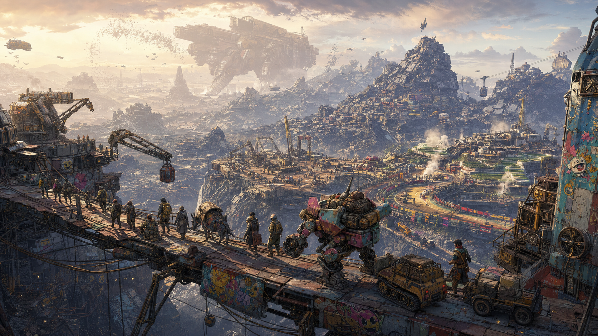
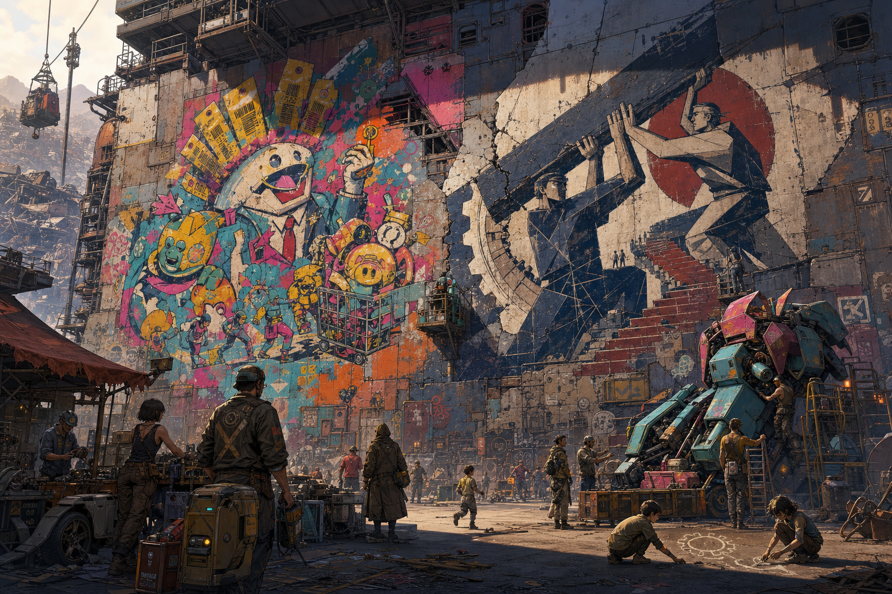
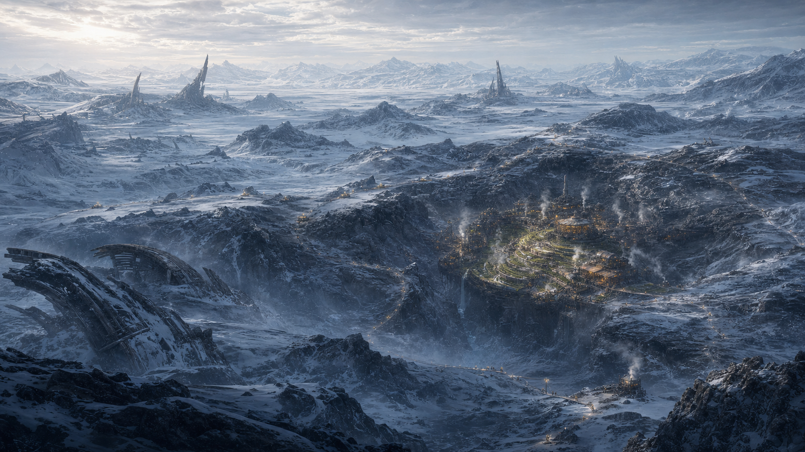
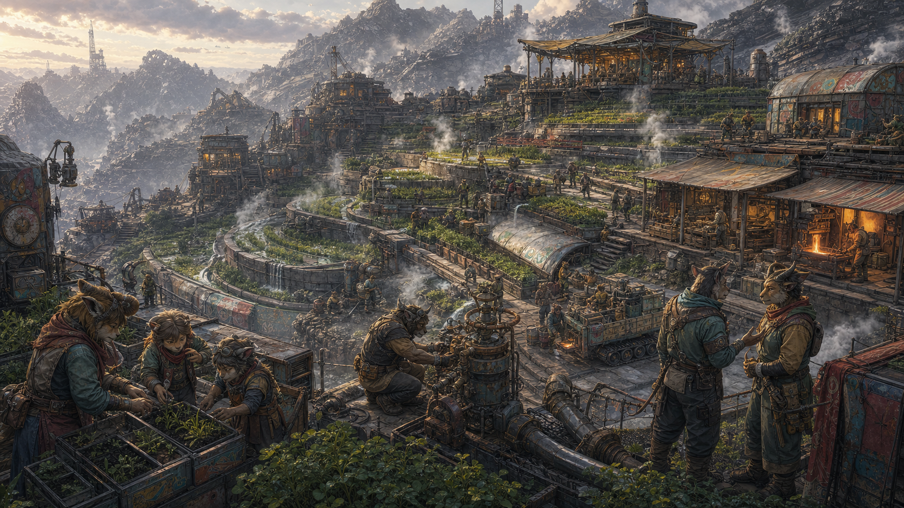

DLC — MUNDO CHATARRA (EL VERTEDERO)
Origen de la ambientación: Mundo Chatarra aparece desarrollado narrativamente en el Arco VI — Primera Visita al Planeta Vertedero (capítulos 38-44) del blog de campaña El Pecio de Seawolf — La Senda del Errante.
"No hay mapas del Vertedero. Los que lo intentaron murieron o enloquecieron."
— dicho habitual entre quienes han estado allí"No era una nave. Era una cicatriz de metal con cohetes."
— frase recuperada de un primer borrador del Vertedero
Parte del suplemento "Mundos y teselas expandidos". Autocontenida: fauna, facciones, criaturas y aventura incluidas. No necesitas el manual base abierto para usarla en mesa. Mundo Chatarra en sí es un mundo de la Urdimbre, no una tesela — ver Punto 1.
DLC completo pendiente de playtest, corrección y maquetación.

Mundo Chatarra: un mundo de la Urdimbre donde comunidades enteras construyen futuro con lo que otros descartaron. La imagen es una impresión de conjunto, no un mapa ni una vista completa del planeta.
PARA EL NARRADOR — LO ESENCIAL EN UNA PÁGINA
Qué es: un mundo de la Urdimbre —no una tesela— donde se acumula la tecnología que ni las corporaciones ni las civilizaciones caídas quisieron conservar. No hay portal estable ni ruta conocida: llegar exige adaptar un vehículo o sacrificar algo caro, y volver puede depender de que alguien más abra la puerta desde fuera.
Qué perciben los personajes al llegar: montañas de chatarra que alcanzan un cielo gris, estructuras que fueron naves hace milenios convertidas en arquitectura accidental, el olor de metal oxidado y algo orgánico que no debería estar ahí. Tecnología que ha dejado de ser tecnología y se ha convertido en geología.
Qué saben los personajes: nadie llega al Vertedero por casualidad — cuesta demasiado. Los que se quedan lo hacen por razones que rara vez comparten del todo.
Riesgo inmediato: el Vertedero no es hostil por diseño — es indiferente. Nada aquí te odia. Pero nada te debe nada tampoco.
Duración recomendada: el Arco VI que inspira este DLC duró tres meses de campaña — el Vertedero rinde mejor como una estancia prolongada que como una incursión rápida. Echar raíces es parte del juego.
Cinco imágenes recurrentes: un taller impecable en medio del óxido; una trampilla que baja a tecnología mejor conservada que la de arriba; algo enorme moviéndose despacio en el horizonte, sin prisa; una fiesta con gente de media docena de mundos bajo el casco de una nave enterrada; una mano enseñándote a soldar sin decir una palabra de más.
Tipos de aventura posibles: ver Punto 15 — desde conseguir una pieza concreta hasta, muy rara vez, algo relacionado con el Coloso. Las escenas pequeñas valen tanto como las extraordinarias.
1. QUÉ ES MUNDO CHATARRA
Mundo Chatarra —el Vertedero, en la jerga de quienes lo visitan— es un mundo de la Urdimbre, no una tesela. No es un universo entero con sus propias leyes físicas: es un planeta donde ha ido a parar, durante milenios, la tecnología que ni las corporaciones ni las civilizaciones caídas quisieron conservar. Naves estrelladas, restos industriales, desechos de imperios que ya no existen. Nadie ha confirmado si alguien lo diseñó así a propósito o si simplemente es donde el abandono ha ido acumulando lo descartado durante generaciones — ambas explicaciones circulan, y ninguna se ha demostrado.
No hay continentes naturales — solo cadenas de chatarra apilada que alcanzan un cielo gris. No hay océanos — solo cuencas de líquido de origen incierto. No hay estaciones reconocibles — solo una penumbra constante, atravesada de cuando en cuando por tormentas de óxido.
Y sin embargo, hay vida. Siempre la hay.
Cómo se accede. No existe un portal estable ni una ruta comercial establecida hacia el Vertedero — es parte de por qué "no hay mapas" es literalmente cierto. Llegar exige adaptar un vehículo para el salto (quemar algo de valor real como combustible estructural no es una posibilidad remota, es lo habitual) o depender de un Maestro de Portales dispuesto a abrir la puerta. No es un viaje que se repita a la ligera. Volver puede ser todavía más difícil que llegar: si lo que hizo posible el salto de ida se consume en el camino, la única salida real puede ser que alguien de fuera abra un portal de rescate. Un grupo que se queda meses no lo hace por comodidad — lo hace porque no tiene alternativa inmediata, o porque ha decidido que merece la pena.
Relación con EP-7. La estación EP-7 es, para los Errantes que operan en esta zona del mosaico, el punto de referencia más cercano al Vertedero — de donde parten las expediciones y adonde regresan, cuando regresan. Eso no significa que el trayecto entre ambos sea sencillo ni rutinario: EP-7 es, simplemente, el hangar conocido más próximo a algo que, por lo demás, no aparece en ningún mapa fiable.
Por qué las comunicaciones son difíciles. No es aislamiento absoluto — hay entradas, salidas y, en Edivan, hasta comercio. La dificultad real tiene dos capas: primero, no hay ruta fija ni portal estable, así que cada contacto con el exterior depende de que alguien haga el viaje; segundo, una vez dentro, la interferencia electromagnética del propio Vertedero —generada por milenios de tecnología degradada— bloquea sensores, cámaras y transmisiones de calidad. Los comunicadores de corto alcance funcionan. Todo lo demás es, como mucho, un rumor de señales rotas.
2. IDENTIDAD DEL VERTEDERO
El Vertedero no es "un montón de chatarra hostil." Es varias cosas a la vez, y ninguna anula a las demás:
- Civilizaciones convertidas en estrato: cada montaña de chatarra es, en cierto sentido, un yacimiento vertical — capas de tecnología de épocas y procedencias distintas, sin orden ni catalogar.
- Tecnología que se ha vuelto paisaje: estructuras que fueron naves hace milenios, ahora oxidadas hasta convertirse en arquitectura accidental.
- Comunidades que viven de recuperar, reparar y adaptar — la gente que se ha quedado no sobrevive a pesar del Vertedero, sobrevive gracias a lo que sabe hacer con él.
- Peligro cotidiano, no excepcional: el terreno colapsa, el metal corta, la fauna se confunde con la chatarra. La rutina ya es exigente.
- Belleza extraña: nadie que ha visto una tormenta de óxido al atardecer lo describe solo como feo.
- Humor y humanidad: la chatarra ríe tan fácil como corta.
- Aprendizaje técnico real: nadie sale del Vertedero exactamente como entró, al menos no con las manos.
- La posibilidad de echar raíces: no es solo un lugar de paso. Se puede vivir aquí — taller, bar, amistades, un maestro que enseña sin prisa, una fiesta, una pérdida.
Nadie viene aquí a propósito. Pero quienes sobreviven, a veces se quedan.
Una estancia larga en el Vertedero se parece a esto: un grupo que llega sin nada, encuentra un asentamiento sin nombre entre dos montañas de metal, y en tres meses ha aprendido a base de golpes y paciencia. Alguien sirve bebidas un par de semanas y termina conociendo a veinte personas por su nombre. Alguien pasa meses con un herrero que no enseña lo que promete enseñar, y aprende algo mejor sin darse cuenta. Alguien construye, con manos improvisadas y manuales pensados para otra especie, algo que no debería funcionar y funciona de todos modos. Y alguien, la última noche antes de que todo cambie, tiene una conversación que no sabe cómo terminar.
No hagas que todo apunte a los Colosos, a una metatrama o al destino del planeta. La mayoría de lo que ocurre en el Vertedero no le importa a nadie fuera de él — y eso está bien.
Dos voces en las paredes
Por el Vertedero circula, junto a la firma ocasional de un chatarrero o el cartel improvisado de un taller, algo distinto: dos voces artísticas que se responden entre sí. Una satírica, irreverente, anticorporativa, que señala contradicciones con humor y no siempre acierta a hacerlo con justicia. Otra estoica, centrada en la voluntad y la responsabilidad frente al caos, que exige actuar en vez de lamentarse —y que entiende la fortaleza también como sostener peso junto a otros, no solo como resistir a solas: reparar, enseñar y mantener lo común dan tanto derecho a beneficiarse de algo como haberlo creado— y a veces confunde firmeza con dureza. Ninguna de las dos es el bando correcto. Ninguna es infalible. No han nacido en Mundo Chatarra —el mismo diálogo aparece, de tarde en tarde, en otros rincones del mosaico— y nadie ha demostrado nunca dónde empezó de verdad.

Dos intervenciones que se responden entre sí. Ninguna de las dos tiene la lectura oficial.
Aparecen en soportes concretos y visibles: placas de mecha, cascos de nave, muros y pasillos de Edivan, talleres, depósitos, puentes, grandes paneles de chatarra junto a las rutas, restos industriales. La mayoría de sus obras son textura, humor, memoria comunitaria, firma territorial o simple protesta —no todo grafiti es una pista, y la mayoría no lo es—; solo alguna, contada, lleva de verdad información codificada, un encargo o una respuesta a algo que acaba de ocurrir. Corporaciones y facciones reaccionan cada una a su manera: alguna intenta comprarlas, alguna borrarlas, alguna apropiárselas, alguna protegerlas.
El propio incidente de Edivan y su reconstrucción (Punto 4) es uno de sus diálogos conocidos: una obra pregunta por qué cada ruina reconstruida acaba siendo propiedad de alguien; otra responde que reclamar algo sin repararlo, sostenerlo o asumir su coste tampoco da derecho a nada. Ninguna de las dos se queda con la última palabra.
3. SUPERVIVENCIA Y VIAJE
Interferencia ambiental. Comunicadores de largo alcance no funcionan — rango efectivo real: contacto visual o poco más. Sensores y cámaras fallan o "ven fantasmas": lo que se graba puede llegar incompleto o corrupto. En cualquier pifia relacionada con un dispositivo electrónico delicado, trátalo como una Manía más de las que ya cubre la Ingeniería de Oportunidad (capítulo del Taller), no como una tabla nueva.
Terreno inestable. Moverse con carga sobre chatarra apilada: tirada de Acrobacias o Supervivencia, dificultad según el terreno. El ruido —herramientas de corte, disparos, motores— no solo es peligroso por sí mismo: cerca de un Coloso, contribuye al Contador de Vibración (Punto 8).
Reparación e improvisación. El Vertedero es el escenario ideal para la Ingeniería de Oportunidad: construir, reparar o adaptar algo sin los materiales adecuados usando Mecánica o Electrónica, con el riesgo de una Manía en vez de un fallo limpio. No hace falta ningún subsistema nuevo — el Taller ya cubre exactamente esto.
Economía. No hay moneda estándar aceptada de forma general. El trueque —piezas funcionales, comida, agua, información sobre rutas seguras, y sobre todo trabajo— mueve más que cualquier crédito. Un forastero que se instala varios meses puede pagar a un maestro artesano en jornadas de trabajo antes que en PC, y salir mejor parado por ello.
Distorsión ambiental. Existen zonas donde cristales de perlas explotadas dejan un residuo detectable: cada hora de exposición suma Deriva acumulada. Una tirada de Supervivencia o Detección de Distorsión permite identificar estas zonas antes de cruzarlas. Los cristales recolectables equivalen, aproximadamente, a una perla blanca parcial (50 PD) por cada puñado reunido — un hallazgo puntual, no una fuente industrial.
4. GEOGRAFÍA Y REGIONES
Nadie ha cartografiado el Vertedero de verdad — el propio terreno cambia con cada nueva descarga de chatarra, y ningún mapa sobrevive más de unas semanas. Lo que sigue son los nombres que los Errantes han empezado a usar, no una topografía oficial.
Las Montañas de Chatarra (Vertedero Central)
La mayor parte del planeta. Cadenas de chatarra apilada que alcanzan el cielo gris, algunas tan inestables que se mueven solas con su propio peso. Cruzarlas sin vehículo adaptado es temerario; con vehículo adaptado, sigue siendo una apuesta.
Aspecto: metal oxidado en todas direcciones, siluetas de naves y estructuras que ya no son reconocibles como lo que fueron.
Sonidos y olores: crujidos constantes del metal asentándose, viento silbando entre huecos, olor a óxido acumulado durante siglos y un rastro orgánico que no debería estar ahí.
Desplazamiento: a pie es lento y peligroso; con vehículo adaptado, más rápido pero más ruidoso — y el ruido tiene consecuencias (Punto 8).
Peligro inherente: colapsos de terreno, fauna que se confunde con chatarra inerte, tormentas de fragmentos metálicos a velocidad de bala.
Recursos: todo lo que cualquier civilización haya tirado alguna vez — la dificultad no es encontrar chatarra, es encontrar algo que valga la pena cargar (Punto 6).
Habitantes: recuperadores independientes, caravanas de paso, Nakel en los márgenes.
Escenas cotidianas: una caravana reparando una rueda partida; un cartel de otra época, ilegible, marcando una ruta que ya no lleva a ningún sitio.
Señales de criaturas: metal removido sin motivo aparente, un silencio repentino donde antes había ruido de fondo.
Forma de evitar el riesgo sin combatir: moverse con sigilo, evitar herramientas ruidosas, rodear en vez de cruzar zonas con signos de actividad reciente.
| 1d100 | Resultado |
|---|---|
| 01-14 | Calma con textura: chatarra tranquila, buen momento para buscar sin prisa |
| 15-28 | Caravana de chatarreros de paso — dispuesta a comerciar o compartir ruta |
| 29-40 | Restos de un vehículo o nave, saqueable (Punto 6 para determinar su estado) |
| 41-52 | Terreno inestable — tirada de Acrobacias o Supervivencia para cruzar sin incidente |
| 53-63 | Señales de fauna reciente — huellas, metal removido, silencio anómalo |
| 64-74 | Tormenta de fragmentos aproximándose — buscar refugio o exponerse |
| 75-84 | Encuentro con Nakel — territoriales, pero negocian si hay algo que ofrecer |
| 85-93 | Hallazgo de interés: tecnología reconocible entre los restos, estado por determinar |
| 94-100 | El terreno delata la proximidad de algo mucho más grande de lo normal — el Coloso (Punto 8) |
El asentamiento sin nombre
Ningún mapa lo registra — no porque esté oculto, sino porque nadie se ha molestado en anotarlo. Es el más conocido entre los Errantes que pasan por el Vertedero, y probablemente el más acogedor — pero no es la capital de nada, ni el único lugar donde vive gente, ni el centro político o comercial de Mundo Chatarra. Es, simplemente, uno de los muchos asentamientos construidos entre los estratos de chatarra, y el que el Arco VI dio a conocer mejor. Otros incluyen pueblos de recuperadores más pequeños, comunidades organizadas alrededor de un solo taller, caravanas que nunca se detienen del todo, enclaves construidos junto a un recurso concreto (agua, un yacimiento rico, una ruta segura), asentamientos ligados a competiciones de mechas (Punto 13), y lugares que aparecen, se trasladan o desaparecen sin más cuando la propia chatarra que los sostiene cambia de sitio. No conviertas este asentamiento en el único que importa — es un ejemplo práctico de cómo puede ser una comunidad del Vertedero, no la referencia obligatoria.
Aspecto: módulos habitables encajados entre dos montañas de metal, calles que son en realidad pasillos entre estructuras, generadores propios zumbando a todas horas.
Sonidos y olores: motores de baja potencia, conversación de fondo, comida cocinándose con lo que haya, metal caliente de la fragua de turno.
Desplazamiento: a pie, todo el asentamiento se recorre en minutos.
Peligro inherente: mínimo dentro del propio asentamiento — la gente cuida lo suyo.
Recursos: el taller mejor surtido del Vertedero (Punto 11), un punto de encuentro sin nombre oficial que todos llaman simplemente "el sitio".
Habitantes: unas pocas docenas de personas como mucho, de procedencias distintas, que decidieron quedarse por razones que rara vez comparten.
Escenas cotidianas: alguien aprendiendo a servir bebidas y terminando por conocer a todo el mundo; una lección técnica que dura semanas y no trata exactamente de lo que promete.
Señales de criaturas: casi ninguna — el lugar se ha ganado su tranquilidad a base de tiempo.
Hallazgos posibles: nada que buscar activamente — el valor real del asentamiento son sus habitantes.
Cómo se recibe a los forasteros: con cautela práctica, no con hostilidad. Nadie pregunta de dónde vienes primero. Preguntan qué necesitas y qué sabes hacer.
| 1d100 | Resultado |
|---|---|
| 01-20 | Calma con textura: vida cotidiana del asentamiento, nada que resolver |
| 21-38 | Alguien necesita una mano en el taller o cargando suministros — pequeño favor, pequeña recompensa |
| 39-54 | Conversación en "el sitio" — rumores, noticias de otras caravanas, alguien que canta mal y no le importa |
| 55-68 | Un habitante ofrece enseñar algo a cambio de trabajo — técnica, ruta segura, historia local |
| 69-80 | Disputa menor entre vecinos por una pieza reclamada dos veces — oportunidad de mediar |
| 81-90 | Un forastero de paso trae noticias de fuera, algunas fiables, otras no |
| 91-100 | Algo llega dañado y nadie sabe repararlo — o alguien lo sabe, y no quiere |
Edivan
Una nave colonial enterrada hace tanto tiempo que el Vertedero ha crecido sobre ella como piel sobre hueso. Caben miles de personas — es, con diferencia, lo más parecido a una ciudad que tiene el Vertedero, y el único lugar donde gente de procedencias radicalmente distintas se encuentra sin buscarse.
Aspecto: tres niveles habitables dentro del casco enterrado, cableado expuesto iluminando los pasillos como venas, suelo de metal pulido por décadas de pisadas.
Sonidos y olores: comida de una docena de culturas mezclándose, voces superpuestas en idiomas que no siempre coinciden, un zumbido de fondo de Distorsión ambiental de baja intensidad que nadie ha sabido clasificar del todo.
Desplazamiento: a pie por los tres niveles; el acceso principal es conocido, pero hay entradas de mantenimiento que solo algunos conocen.
Peligro inherente: social antes que físico — reputación, deudas, enemistades declaradas en público.
Recursos: el mejor mercado del Vertedero, información, contactos de fuera.
Habitantes: población flotante de múltiples poblados, múltiples especies, múltiples historias.
Escenas cotidianas: tratos cerrándose a voces, una fiesta improvisada, una discusión de teoría de portales entre desconocidos en un rincón.
Cómo se resuelven las disputas: por costumbre y reputación más que por ley escrita — quien traiciona la confianza de quienes lo acogen no vuelve a ser bienvenido en ningún asentamiento que se entere. No es una norma formal; es lo más parecido que tiene el Vertedero a una.
Riesgo real: Edivan ha demostrado, al menos una vez, que la presencia militar de paso puede acabar en desastre sin que nadie lo busque — unas detonaciones para abrir una vía de salida bastaron para que unas defensas automáticas próximas respondieran por proximidad, y el intercambio resultante colapsó buena parte de la estructura (Punto 12). No es tan segura como parece.
Reconstrucción: Edivan fue reconstruida después del colapso, sobre el mismo emplazamiento o en un enclave cercano y semejante —las noticias que llegan al resto del Vertedero no lo precisan, y no hace falta cerrarlo—. Sigue siendo uno de los muchos lugares del Vertedero, no su capital ni el centro de todo lo demás.
No mantiene tabla de encuentros propia — trátalo como escenario de escena, no como territorio a explorar al azar.
El Norte — Territorio de las Bestias

El Norte a finales de otoño o en pleno invierno: un foco térmico habitado en medio de un territorio helado que se extiende hasta donde alcanza la vista.
Zona de altura con un microclima que no encaja con el resto del planeta: volcanes termales, fuentes de agua caliente, terrazas cultivadas sobre metal oxidado. Nadie ha confirmado por qué esta zona concreta se mantiene estable — algunos dicen que es diseño, otros que es una avería afortunada en algún sistema climático enterrado, y las propias Bestias tienen su propia explicación (Punto 9).
Estacionalidad. Dentro de los canales, las terrazas y la infraestructura geotérmica, cultivos, talleres y viviendas se mantienen todo el año. Basta alejarse de esa infraestructura para que el frío se note enseguida, y a finales de otoño y en invierno el contraste entre el foco térmico habitado y el exterior es extremo —la imagen de arriba muestra exactamente ese momento del año, no la norma constante—. En los meses más templados los cultivos se extienden, algunas rutas permanecen abiertas más tiempo, aumenta el comercio con caravanas y chatarreros, y hay más trabajos al aire libre. En invierno, la comunidad se concentra alrededor del calor, las rutas exigen señalización y refugios, el mantenimiento térmico se vuelve la prioridad diaria, y cualquier desplazamiento exterior requiere preparación real —sin que eso convierta cada invierno en una crisis mortal: es una estación exigente, no un desastre anual—. Cualquier consecuencia mecánica de la exposición al frío se resuelve con las reglas vigentes de supervivencia y clima, sin un subsistema propio.
El exterior térmico. Más allá de los canales cultivados, esta región tiene menos chatarra que las zonas centrales del planeta: sus restos son mucho más antiguos y están profundamente erosionados, hasta el punto de confundirse con la propia geología —costillas de naves semienterradas, placas fusionadas con acantilados, armazones cubiertos de hielo y depósitos minerales—. No es un territorio vacío de historia; es un territorio donde esa historia lleva más tiempo dormida.
Aspecto: verde, insólito, con vapor subiendo entre terrazas de cultivo; alrededor, hielo, roca y restos antiguos que apenas se reconocen como tecnología.
Peligro inherente: fauna territorial, terreno volcánico inestable en los bordes, y en invierno, exposición real fuera de las zonas templadas.
Habitantes: las Bestias del Norte (Punto 9), organizadas en varios asentamientos propios, no solo en el Monasterio de los Libros.
Cómo se recibe a los forasteros: con reserva — no es territorio hostil por defecto, pero tampoco abierto sin más.
La Llanura Cortante
Extensión de chatarra plana y afilada, azotada por vientos que arrastran fragmentos de metal a velocidad de bala. Las Bestias la conocen y la evitan cuando pueden; la mayoría de recuperadores hace lo mismo.
Peligro inherente: viento cortante — cualquier tiempo prolongado a la intemperie sin protección adecuada expone a heridas por fragmentos.
Recursos: precisamente por lo poco visitada que es, lo que queda sin recuperar aquí lleva más tiempo intacto que en cualquier otra zona.
La Cuenca Hundida
Donde la chatarra se hundió hace milenios, formando algo parecido a un mar de metal denso. Uno de los seis Colosos localizados cayó aquí (Punto 8) — su posición se conoce, su estado no. Nadie ha bajado a comprobarlo. Mantenla como misterio.
Zona Volcánica (Sur)
Corrientes de metal fundido bajo la superficie, inestable y peligrosa por derecho propio. Otro de los seis Colosos localizados está aquí, dentro de un volcán activo — igual de inaccesible que el de la Cuenca, por razones mucho más obvias.
Generador de asentamientos — más allá del mapa conocido
El asentamiento sin nombre es uno entre muchos, no una capital ni la referencia obligatoria de todo el Vertedero. No hay una única forma correcta de vivir aquí: cada comunidad nace de una necesidad concreta y de los recursos que tenía a mano, y sigue existiendo aunque los personajes nunca la visiten. Esta herramienta sirve para improvisar cualquiera de esas otras comunidades en el momento, o para prepararlas con calma antes de sesión.
Tira en cada tabla, elige el resultado que mejor encaje, o combina varias — no hace falta usarlas todas a la vez, y un asentamiento con solo tres o cuatro rasgos definidos ya es jugable. Varios resultados describen calma, prosperidad modesta o humor cotidiano: no todo asentamiento necesita un peligro activo para ser interesante.
No todo el planeta son montañas densas de chatarra reciente. Estas tablas sirven igual para el Norte y otras zonas de restos antiguos y dispersos: donde un resultado hable de "chatarra" o "montañas de metal", reinterpreta libremente como restos erosionados, geologizados o escasos si el asentamiento nace fuera de las Montañas de Chatarra centrales.
1. Origen físico (1d8)
- Grieta natural entre dos montañas de chatarra
- Cráter reutilizado
- Carcasa de una nave varada, adaptada por dentro
- Plataforma elevada sobre la propia chatarra
- Túnel de mantenimiento antiguo, ampliado con el tiempo
- Claro despejado a mano, palmo a palmo
- Un punto fijo en una ruta de caravanas
- Cornisa junto a una cuenca de líquido de origen incierto
2. Recurso que lo sostiene (1d6)
- Un yacimiento de chatarra rico y accesible
- Una ruta de paso segura, o casi
- Agua estable
- Un taller o un maestro de oficio reconocido
- Cultivo o cría propios
- Nada material — solo la gente que decidió quedarse junta
3. Sistema energético (1d6)
- Un generador reconstruido, compartido por turnos
- Baterías recuperadas y racionadas
- Una pequeña red local entre unos pocos módulos
- Captación solar o eólica improvisada
- Varias fuentes sin coordinar entre sí
- Depende de un vecino con más recursos
4. Agua y alimentación (1d6)
- Condensadores propios
- Cultivo resistente en terrazas o macetas improvisadas
- Proteína industrial recuperada y adaptada
- Comercio regular de agua o comida con otro asentamiento
- Reciclaje cerrado, eficiente
- Escasez real y periódica — dura, pero no hambruna
5. Oficio dominante (1d8)
- Recuperación y reventa
- Reparación mecánica general
- Mechas — construcción o pilotaje
- Agricultura o ganadería adaptada
- Comercio y trueque
- Runas o Tron (raro)
- Guía y transporte
- Cuidado — sanidad, crianza, enseñanza
6. Gobierno o forma de decisión (1d6)
- Sin autoridad — todo por reputación
- Consejo informal de mayores u oficios
- Una sola figura respetada, sin título oficial
- Asamblea abierta cuando hace falta decidir algo
- Jerarquía de casta o familia (si son Bestias)
- Rota entre quien tenga más experiencia en cada problema concreto
7. Relación con forasteros (1d6)
- Cautela práctica, como el asentamiento sin nombre
- Abierta y comercial
- Recelosa, tras una mala experiencia reciente
- Indiferente — ni bienvenida ni rechazo
- Exige un intercambio claro antes de confiar
- Cerrada, salvo contacto previo de alguien conocido
8. Problema de mantenimiento (1d8)
- Un generador falla de forma intermitente
- Fuga de agua o líquido corrosivo
- Una pieza clave, irremplazable, se ha roto
- Un condensador se satura y exige limpieza constante
- El terreno bajo el asentamiento se mueve
- Plaga de Carroñeros Metálicos u otra fauna menor
- Demasiada gente para el espacio real
- Falta de manos con el oficio adecuado
9. Peligro cercano (1d6)
- Fauna territorial de paso
- Tormentas de fragmentos frecuentes en la zona
- El Coloso pasa cerca, de tarde en tarde
- Una facción rival por el mismo recurso
- Terreno inestable de forma permanente
- Ninguno inmediato — la calma también es un resultado válido
10. Particularidad cultural (1d8)
- Una fiesta o ritual propio, pequeño
- Rivalidad amistosa con otro asentamiento
- Un plato o bebida que los identifica
- Una norma social que un forastero puede romper sin saberlo
- Un oficio que se enseña de forma poco ortodoxa
- Una historia fundacional que puede o no ser cierta
- Jerga o vocabulario propio
- Humor local muy específico
11. Interés corporativo o ausencia (1d6)
- Ninguno — no le interesa a nadie de fuera
- TecnoStealer, comprador puntual y discreto
- Chafry, interés histórico o científico remoto
- Sin corporación, pero sí un comprador independiente
- Interés pasado, ya cerrado
- Interés que el propio asentamiento prefiere no fomentar
12. Obra callejera visible (1d6)
- Ninguna reciente
- Textura decorativa, sin mensaje
- Una firma territorial reconocible
- Respuesta a un suceso local reciente
- Una de las dos voces transversales, de paso
- Dos obras que se responden entre sí, sin resolverse
13. Acontecimiento actual (1d8)
- Nada fuera de lo normal
- Una boda, un nacimiento o un duelo reciente
- Disputa sin resolver entre dos vecinos
- Preparativos para un torneo o una feria
- Un forastero de paso trae noticias
- Algo importante se ha roto y aún no se ha reparado
- Alguien se plantea marcharse
- Alguien nuevo se plantea quedarse
No conviertas automáticamente una corporación en antagonista solo por aparecer en la tabla 11, ni hagas de las dos voces transversales el centro de todos los asentamientos — la tabla 12 las reserva, a propósito, a una minoría de resultados.
Tres asentamientos ya montados
Ejemplos completos construidos con este generador, listos para usar o adaptar.
A. La Cuña — recuperadores, distinto del asentamiento del blog
Qué lo sostiene: una ruta de paso relativamente segura entre dos brazos de las Montañas de Chatarra; quien cruza deja algo de trabajo o información a cambio de vigilancia y reparaciones rápidas.
Quién decide: un consejo informal de tres recuperadores veteranos que rotan la última palabra según el tema.
Cómo es vivir allí: ruidoso y práctico — carretas entrando y saliendo, poca gente se queda más de un mes, mucha se queda para siempre sin haberlo decidido.
Qué ofrece: reparaciones básicas rápidas y noticias de rutas actualizadas semana a semana.
Problema actual: el terreno bajo el paso que vigilan se ha vuelto inestable, y el peaje habitual —una jornada de refuerzo estructural— ya no basta para mantenerlo seguro.
Sin los PJ: el consejo termina cerrando el paso a las caravanas grandes, lo que corta temporalmente una ruta que otros asentamientos daban por hecha.
PNJ: Idara, vigía de la ruta (1 profesión, funcional); Coz, comerciante ambulante que discute precios por deporte y cariño (2 profesiones); el Chico del Cable, nadie recuerda su nombre real, arregla lo que nadie más quiere tocar (1 profesión).
Ganchos: (cotidiana) ayudar a reforzar el paso a cambio de alojamiento y noticias; (local/criminal) alguien está cobrando un peaje propio sin que el consejo lo sepa, y las caravanas empiezan a quejarse del asentamiento entero por ello.
Obra visible: una carreta de ruedas desiguales pintada junto a la entrada — decoración cariñosa, sin mensaje oculto.
B. Los Bancales — comunidad de Bestias del Norte, no un monasterio
Qué lo sostiene: terrazas de agricultura sobre agua termal, más un pequeño taller de herramientas agrícolas adaptadas.
Quién decide: una familia de casta Campesino con más terreno lleva la voz en el riego; las disputas de casta se resuelven acudiendo a quien tenga más antigüedad, sin que el Monasterio intervenga nunca.
Cómo es vivir allí: trabajo físico constante, comidas comunales, niños Bestia corriendo entre las terrazas, y una tensión ligera pero real entre castas Campesino y Comerciante sobre qué es un precio justo. La vida cambia con la estación (ver "Estacionalidad" en El Norte, más arriba): más trabajo exterior y comercio en los meses templados, más concentración alrededor del calor en invierno.

El interior operativo de Los Bancales, en una estación templada — no necesariamente el mismo día que la panorámica invernal del Norte.
Qué ofrece: comida fresca —rara en el resto del Vertedero— y herramientas agrícolas bien adaptadas al terreno.
Problema actual: un comerciante Bestia quiere vender el excedente fuera del Norte, rompiendo la costumbre no escrita de no comerciar con quien no ha demostrado respeto por el Equilibrio.
Sin los PJ: la disputa se resuelve sola y mal — el comerciante se marcha, y Los Bancales pierden un canal de venta que llevaba años funcionando.
PNJ: Tami, campesina que decide el riego (1 profesión); Orso, comerciante Bestia detrás de la idea polémica (2 profesiones); un niño Bestia curioso que hace demasiadas preguntas (masilla, sin profesión).
Ganchos: (comunitaria) mediar en la disputa sobre la venta fuera del Norte; (laboral/exploratoria) una plaga menor amenaza una terraza y hace falta ayuda externa antes de que se extienda a las demás.
Obra visible: un mural comunitario al que cada familia añade una pincelada tras la cosecha — memoria comunitaria pura, nunca una pista.
C. El Circuito — talleres y competiciones de mechas, no el campeonato de nadie
Qué lo sostiene: dos o tres talleres rivales que viven de la reputación de sus mechas; carreras y demostraciones atraen visitantes de otros asentamientos varias veces al año.
Quién decide: nadie con autoridad única — cada taller decide lo suyo, y las normas del circuito las acuerdan entre ellos de forma informal, rompiéndose de vez en cuando.
Cómo es vivir allí: ruido constante de soldadura y motores, apuestas informales sobre cualquier cosa, rivalidad casi siempre amistosa entre talleres.
Qué ofrece: reparación y mejora de mechas, espectáculo, un buen sitio para apostar.
Problema actual: uno de los talleres sospecha sabotaje antes de la próxima carrera —pruebas circunstanciales, acusación todavía sin hacer pública.
Sin los PJ: la carrera se celebra igual, con o sin sabotaje resuelto, y alguien pierde reputación si la duda no se aclara a tiempo.
PNJ: Renke, piloto veterana de un taller (2 profesiones); Bosco, jefe del taller rival (2 profesiones); un aprendiz que sueña con pilotar sin saber soldar todavía (1 profesión).
Ganchos: (competición) participar como piloto o mecánico invitado en la próxima carrera; (social/sabotaje) investigar la sospecha antes de que estalle en una acusación pública que nadie podrá retirar después.
Obra visible: una de las dos voces transversales ha pintado, en un muro del Circuito, un mecha caído con una frase corta que puede leerse como comentario sobre la rivalidad de los talleres — o como nada en absoluto. No resuelve el sabotaje ni apunta a nadie en concreto.
5. COMUNIDADES Y VIDA COTIDIANA
El Vertedero no tiene una sociedad única — tiene varias, superpuestas, que rara vez se cruzan salvo en Edivan.
Comida y agua. Los asentamientos estables combinan reciclaje de agua, condensadores atmosféricos, cultivos resistentes (las terrazas del Norte son el ejemplo más visible, pero no el único) y proteína industrial o sistemas alimentarios recuperados y adaptados a lo que haya. Mundo Chatarra no es una hambruna permanente — nadie pasa hambre por sistema, pero tampoco sobra nada, y cada asentamiento depende de que alguien mantenga esos equipos funcionando. Un condensador que falla o una terraza que se seca no amenaza a todo el planeta: es, casi siempre, el problema concreto de una comunidad concreta, y una buena semilla de aventura local.
Energía. No existe una red planetaria unificada — cada asentamiento se las arregla con lo que tiene: generadores reconstruidos, baterías recuperadas, pequeñas redes locales entre unos pocos módulos. En un asentamiento estable la energía es relativamente accesible, pero irregular y siempre dependiente del mantenimiento; los cortes y las reparaciones improvisadas forman parte tan normal de la vida cotidiana como el óxido mismo.
Sanidad. Médicos prácticos, autodocs reparados con piezas de procedencia dudosa, prótesis y implantes adaptados a lo que se pueda conseguir. La respuesta ante traumatismos, accidentes de taller o heridas de faena es buena — es, al fin y al cabo, lo que más se practica—. Ante enfermedades raras, tratamientos largos o biología que nadie conoce, la capacidad real cae mucho: el Vertedero cura lo que sabe curar, y remite el resto a quien pueda permitirse salir a buscar algo mejor.
Educación. Se aprende haciendo, no en un aula: talleres, maestros que cobran en trabajo, cuadrillas que enseñan sin proponérselo, manuales recuperados que circulan de mano en mano. Saber reparar, adaptar o enseñar da prestigio real, y no todo conocimiento útil es secreto ni exclusivo de una sola persona — Davan (Punto 7) es memorable precisamente porque es raro en lo que enseña, no porque sea el único capaz de enseñar algo de valor; cualquier asentamiento con un maestro de oficio propio puede ofrecer lo mismo a su escala.
De qué vive la gente. De recuperar, reparar, adaptar y, sobre todo, de saber hacer algo que otro necesita. El trabajo pesa más que el dinero.
Cómo se intercambian bienes. Trueque directo: piezas funcionales, comida, información de rutas, y trabajo mismo como moneda de cambio. Alguien que se instala una temporada larga puede pagar a un maestro en jornadas de trabajo en vez de créditos, y salir mejor parado por ello que con cualquier tarifa fija.
Qué se considera valioso. Menos "qué es" y más "para qué sirve ahora mismo". Una pieza sin uso inmediato vale poco aunque sea rara; una pieza corriente que resuelve un problema real vale mucho.
Clasificación de hallazgos. Ver Punto 6 — el Vertedero no premia cualquier tirada de búsqueda con tecnología valiosa. La mayor parte de lo que se encuentra es, sencillamente, chatarra.
Quién reclama un hallazgo. Norma no escrita pero respetada: quien lo encuentra primero, o quien lo estaba rastreando activamente, tiene prioridad. Reclamar un hallazgo ajeno sin acuerdo previo es la fuente más común de disputas locales.
Cómo se resuelven disputas. Sin autoridad central que las arbitre — mediación informal entre las partes, apoyada en la reputación de cada uno.
Servicios existentes. Un taller bien surtido en el asentamiento sin nombre, un punto de encuentro sin nombre oficial que hace de bar, y en Edivan, prácticamente cualquier cosa que se pueda negociar.
Protección de talleres y asentamientos. Informal: vecinos que se conocen, reputación que precede a cualquiera, y la simple lógica de que atacar al único taller decente perjudica a todo el mundo, incluido el agresor.
Bares, fiestas y espacios comunitarios. El corazón social del Vertedero. El punto de encuentro sin nombre del asentamiento es donde circulan los rumores reales; Edivan, en sus mejores noches, es una fiesta que reúne a gente de media docena de mundos bajo el mismo casco enterrado.
Cómo se recibe a los forasteros. Con cautela práctica, no con hostilidad automática. Nadie pregunta de dónde vienes primero — preguntan qué sabes hacer y qué necesitas.
Por qué alguien decide quedarse. Razones que casi nunca se comparten del todo: una maestría a medio aprender, una relación que empieza sin planearlo, la simple certeza de que en ningún otro sitio te necesitan tanto como aquí.
No hay una sociedad monolítica: hay un asentamiento sin nombre, caravanas de paso, recuperadores independientes, talleres familiares, un territorio con su propia cultura religiosa y técnica en el Norte, y zonas —la mayoría del planeta— sin ninguna autoridad estable.
6. TECNOLOGÍA, RECUPERACIÓN Y FABRICACIÓN
El Vertedero no necesita un sistema económico propio — usa el Taller del Errante y sus reglas de reparación de vehículos, con la Ingeniería de Oportunidad como añadido natural para cuando faltan materiales o herramientas adecuadas (Punto 3).
Niveles de hallazgo. No toda chatarra es igual, y ninguna tirada de búsqueda debería producir automáticamente tecnología valiosa:
- Chatarra común: el grueso de lo que cubre el planeta. Sin valor salvo como materia prima bruta.
- Materia prima: metal, cableado, componentes básicos reutilizables — la base de cualquier reparación de campo.
- Componente recuperable: una pieza concreta, identificable, potencialmente útil — pero todavía sin garantía de funcionar.
- Pieza funcional: ya probada o evidentemente operativa, lista para usarse o venderse.
- Tecnología reparable: dañada pero arreglable con las herramientas y el tiempo adecuados.
- Tecnología que supera el NT del usuario: identificable, quizás valiosa, pero inutilizable sin conocimiento o equipo que el personaje no tiene todavía.
- Artefacto excepcional: poco frecuente, memorable, con historia propia — no algo que se encuentre por rutina.
- Estructura imposible de trasladar: demasiado grande, integrada o peligrosa para moverla — solo se puede explotar in situ, si es que se puede.
Qué importa al recuperar algo: identificarlo, desmontarlo, transportarlo, evaluar su estado real, comprobar compatibilidad, repararlo si hace falta, encontrar comprador, y aceptar el riesgo de que alguien más lo reclame primero. La Tabla de Salvamento del capítulo de Vehículos (1d10, Destruido a Intacto) cubre el procedimiento exacto para componentes de vehículo; para tecnología general, aplica el mismo criterio con Mecánica o Electrónica.
Venta. Se aplican los canales ya establecidos: tienda legal (30-40%, solo bienes limpios), mercado negro o contacto Mort (40-60%, genera Calor), TecnoStealer si hay contacto o Afiliación (50-70%, la mejor tasa para tecnología recuperada). El Vertedero no tiene compradores propios de ese calibre — cualquier venta seria implica sacar la pieza de aquí primero.
Dificultades. Cualquier umbral antiguo tipo "Habilidad 60+" se traduce al modificador vigente según lo que la escena pida, no por aritmética: una identificación rutinaria es Normal (0) o Fácil (+10); una reparación de campo bajo presión es Difícil (−10); restaurar tecnología que nadie entiende ya puede ser Extremadamente difícil (−20), y el Narrador puede exigir la habilidad concreta sin sustitutos.
7. TRON, RUNAS Y DAVAN
El Vertedero no tiene una industria rúnica propia ni yacimientos conocidos de Tron. Lo que sí tiene es a Davan.
Davan es un herrero rúnico autodidacta, sin diploma ni escuela reconocida, de nivel considerable pese a ello. No enseña runas —lo deja claro desde el principio a quien se lo pide—. Lo que enseña es más fundamental: la gramática que hace posibles las runas. Cómo se mueve la Distorsión a nivel estructural, por qué los portales se abren donde se abren, qué hace que un punto del espacio sea más permeable que otro. Sus propios muros están cubiertos de grabados que no son decoración sino lenguaje funcional — prueba de que sabe más de lo que enseña, aunque nunca se le vea inscribir una runa delante de nadie.
Cobra en trabajo, no en créditos. Un alumno paciente puede pasar semanas —o meses— a su lado sin avanzar más allá de la teoría, y descubrir después que esa teoría vale más que la técnica que esperaba. Al final de una instrucción larga, puede entregar algo sin explicar qué es, solo que se entenderá cuando haga falta. No fuerces esa respuesta — es exactamente el tipo de misterio que funciona mejor sin resolver.
Qué desconoce: todo lo que no ha tenido que resolver con sus propias manos. No es un archivo universal de conocimiento rúnico — es un autodidacta con límites reales.
Cómo reutilizarlo en otra mesa: no hace falta reproducir la campaña de origen. Cualquier personaje con paciencia y algo que ofrecer a cambio (trabajo, mayoritariamente) puede ganarse sesiones con Davan. Lo que se aprende es transferible — la gramática de la Distorsión, no una runa concreta — así que sirve igual de bien como semilla de trasfondo que como recompensa de campaña.
Tron y runas, alineado con las reglas vigentes. El Vertedero no genera Tron-1 en bruto de forma conocida —no hay portales permanentes ni anomalías persistentes que lo produzcan aquí—, y no existe distribución de Tron refinado (ratio 25:1) a través de ningún canal local. Cualquier Tron que aparezca en juego llegó de fuera, en cantidades pequeñas, con alguien que lo trajo consigo. No inventes depósitos ni una industria rúnica que el propio origen del DLC no sostiene: el material es escaso por diseño, y esa escasez es parte de lo que hace memorable cualquier uso de runas o Tron aquí.
8. LOS COLOSOS
Hay doce Colosos. Solo seis están localizados —el resto no lo está, o su situación actual no puede confirmarse—. Los protagonistas del Arco VI encontraron y observaron exactamente uno. Nada de lo que sigue implica que llegaran a conocer a los otros once: lo que el Narrador sabe y lo que un personaje concreto ha visto son dos cosas distintas, y este DLC habla desde la posición del Narrador.
Confirmado para el Narrador
- Número total establecido: doce.
- Número localizado: seis (ver desglose más abajo). Los otros seis no tienen ubicación conocida — sus siluetas se reportan, de tarde en tarde, en tormentas de óxido, y nunca se han confirmado.
- El Coloso del Arco VI —el mejor documentado de los doce— mide entre 78 y 82 metros de altura, con varios miles de toneladas de masa. Se desplaza despacio, poco más de dos kilómetros por hora, por el centro del Vertedero habitable.
- Comportamiento observado: indiferencia total. No caza, no defiende territorio de forma activa, no reacciona a la presencia de personas o vehículos salvo que se interpongan literalmente en su camino. Si te apartas, te ignora. Si te interpones, te integra.
- Alimentación: consume chatarra de forma continua — el ritmo exacto varía según quién lo cuente (los propios testigos del Arco VI no se pusieron de acuerdo en si era cuestión de horas o de días), pero que se alimenta de metal acumulado no está en duda.
- Capacidad de integrar o reparar materia: confirmada — tecnología incrustada en el cuerpo como si la hubiera absorbido durante siglos, paneles oxidados que son a la vez carne y metal, cables colgando como tendones.
- Regiones con señales identificadas: además del ejemplar activo del Arco VI, hay indicios de localización —aunque no de estado ni de acceso— en una sima profunda al oeste, en un volcán activo del sur, y en dos puntos donde el rastro se detuvo hace tiempo sin explicación.
No confirmado
Nadie sabe, y este DLC no lo decide por ti:
- Quién los creó, o si "crear" es siquiera el verbo correcto.
- Si están vivos en un sentido biológico reconocible.
- Si son plenamente conscientes, parcialmente conscientes, o ninguna de las dos cosas.
- Si los doce comparten una finalidad común, o si cada uno es, sencillamente, lo que es.
- Si pueden comunicarse —entre ellos, o con cualquier otra cosa.
- Si el mundo se formó alrededor de ellos, o si ellos llegaron después, como todo lo demás.
- Qué ocurrió realmente con el Coloso de la Cuenca Hundida.
La única pista narrativa disponible sobre cualquiera de estas preguntas es la reacción de quien observa al Coloso del Arco VI de cerca por primera vez —algo parecido al reconocimiento, más que al miedo— y ni siquiera eso se ha explicado jamás. No afirmes como hecho que los Colosos son anteriores a máquina y criatura, dioses, constructores del mundo o seres conscientes. Puede que lo sean. Puede que no.
Por qué un grupo huye. Normalmente, simple prudencia — algo de ese tamaño moviéndose hacia tu posición no invita a quedarse a comprobar intenciones. No hace falta que ataque para que la decisión correcta sea marcharse.
Diferencia de escala en los encuentros
No todo encuentro con el Coloso es el mismo tipo de escena:
- Señal de proximidad: vibración en el suelo, chatarra reorganizándose a lo lejos, silencio anómalo de la fauna menor.
- Encuentro distante: visible en el horizonte, sin riesgo inmediato si nadie llama su atención.
- Peligro territorial: su ruta de consumo cruza la zona donde el grupo necesita estar.
- Interacción accidental: el grupo genera ruido o vibración suficiente sin darse cuenta y atrae su atención.
- Persecución o huida: el Coloso ha girado hacia el grupo — rara vez agresiva, casi siempre evitable con sigilo o distancia.
- Acontecimiento mitológico excepcional: algo fuera de lo normal —se detiene, cambia de ruta sin motivo aparente, "reacciona" a algo— y se convierte en el gancho de una crónica entera, no en un encuentro de una escena.
Mecánica: Contador de Vibración (0 a 10)
| Acción | Puntos |
|---|---|
| Caminar con sigilo | 0 |
| Hablar en voz alta / correr | +1 |
| Herramientas de corte o soldadura | +3 |
| Armas de energía o explosivos | +5 |
| Distorsión de alta intensidad o runas | +4 |
Al llegar a 10: el Coloso cambia de ruta hacia la fuente del ruido. No es un temporizador de combate — es la señal de que toca alejarse, esconderse o apagar lo que esté haciendo ruido.
Efectos de proximidad: el suelo puede colapsar a su paso (Esquivar o Acrobacias; fallo = la caída pasa directamente al personaje de Sano a Herido, o de Herido a Tullido si ya estaba Herido, y daña el equipo); un pulso electromagnético cercano puede apagar equipo no blindado (Mecánica para reiniciar).
Cómo sobrevivir al Coloso. No se combate. Se esquiva, se distrae (generadores de ruido a distancia, para desviar su atención hacia otro punto) o se evita por completo (estructuras de metal denso bloquean la vibración que lo guía).
Si la mesa insiste en combatir. No lo trates como un jefe con PV convencionales — es una amenaza de escena, no una ficha de combate. Dale partes vulnerables concretas (una junta expuesta, un panel suelto), objetivos claros (llegar a cubierto, cortar una vibración, escapar del radio de su siguiente paso) y una ruta de supervivencia real. Ganar no significa "reducir sus puntos de vida a cero" — significa sobrevivir al intento con vida, y probablemente sin haber conseguido gran cosa más. Si necesitas una amenaza puntual dentro de esa escena, los Enjambres Defensivos (Punto 10) son la que realmente tiene sentido dirigir con reglas de combate normales.
La Cuenca Hundida
Uno de los seis Colosos localizados cayó aquí, hace mucho, y no volvió a la superficie. Es, de los seis, el único del que no se sabe absolutamente nada más allá de su posición aproximada — nadie ha bajado a comprobarlo. Mantenlo así: es más valioso como misterio sin resolver que como otro Coloso más con estadísticas.
9. LAS BESTIAS DEL NORTE
Las Bestias del Norte, su cultura y el Monasterio de los Libros son parte real de Mundo Chatarra — tan canon como el asentamiento del Arco VI o el propio Coloso. Que sus protagonistas no llegaran al Norte durante esos tres meses no las convierte en opcionales ni en rumor: el Arco VI muestra una parte limitada del mundo, no un atlas completo (Punto 17).
"Bestias" es, casi con seguridad, un exónimo — el término que usan chatarreros y recuperadores para nombrarlas desde fuera, no necesariamente cómo se llaman ellas mismas. Qué nombre usan para sí mismas es una decisión abierta para cada mesa; muchas simplemente se identifican por su asentamiento o su casta antes que por una etiqueta de especie.
Origen: qué sabe cada cual
Hecho, para el Narrador. Las Bestias son producto de experimentación corporativa: una subsidiaria tapadera de Chafry, hace generaciones, intentó replicar el éxito comercial de los Hombres y Mujeres Gato. El proyecto fracasó según los estándares de Chafry, que ordenó su destrucción. Un grupo interno las liberó durante la huida; la nave sufrió un accidente, y como último recurso lanzaron las cápsulas de suspensión al espacio. La mayoría cayeron en el norte del Vertedero. La subsidiaria ya no existe formalmente, y nadie las ha buscado desde entonces — al menos, nadie que lo haya hecho público.
Lo que las propias Bestias conservan. La misma historia, a grandes rasgos, sobrevive en su tradición oral — aunque no todas las familias la cuentan igual, y algunas la tratan más como mito fundacional que como registro histórico. Lo que sí conservan con precisión es lo que vino después: la caída, la adaptación, la Nave de los Libros y todo lo que construyeron a partir de ahí. Su propia historia, para ellas, empieza donde termina el expediente de Chafry.
Lo que solo sabe TecnoStealer. Los detalles exactos del proyecto original —qué buscaba conseguir Chafry, qué salió mal, por qué se ordenó la destrucción en vez de simplemente abandonarlo— no sobrevivieron en ningún archivo al que las Bestias tengan acceso. TecnoStealer sí ha reconstruido buena parte de esa historia, a partir de registros corporativos antiguos y su interés profesional habitual por cualquier experimento genético ajeno — y no ha compartido nada de lo que sabe. Es exactamente el tipo de ventaja silenciosa que le gusta acumular.
Rumores de terceros. Todo lo demás —que Chafry sigue vigilando desde la distancia, que quedan más cápsulas sin caer en algún punto del sistema, que el accidente de la nave no fue accidente— es especulación de chatarreros y viajeros, sin respaldo confirmado en ninguna dirección.
Los textos. La Nave de los Libros es tangible: una biblioteca recuperada de una nave desmantelada, con textos que las propias Bestias identifican —lo saben, los han leído, no es un misterio para ellas— como pertenecientes a una tradición histórica concreta de un mundo remoto, de estética marcadamente cercana al periodo Edo japonés de la Tierra. Eso es lo que ellas saben sobre sus propios textos. Lo que describes en mesa no es "una cultura Edo trasplantada" — es la cultura propia que las Bestias construyeron adoptando y reinterpretando esos valores durante generaciones: su arquitectura, sus costumbres, su indumentaria, su disciplina, su organización, tal como son ahora. La referencia histórica es su propia explicación interna, no tu atajo descriptivo como Narrador.
Identidad cultural
Las Bestias no son un monolito. Hay asentamientos más allá del Monasterio de los Libros —comunidades agrícolas en las terrazas termales, talleres, algún puesto de comercio con chatarreros de confianza— y el sistema de castas (ver mecánica más abajo) genera tensiones internas reales: un Noble y un Campesino no ven el Equilibrio de la misma manera, y esa fricción es tan parte de su cultura como el propio Voto.
Tecnología y recuperación. Aunque su corazón cultural mira hacia dentro, las Bestias no son ajenas al resto del Vertedero — comercian con chatarreros de confianza, recuperan tecnología con las mismas reglas que cualquiera (Punto 6), y algunas castas (Artesano, Monje) desarrollan un dominio técnico notable.
Negociación. Valoran el respeto por sus formas más que la riqueza ofrecida. Un trato mal presentado, aunque generoso, puede fallar donde uno modesto pero respetuoso triunfa.
Relación con forasteros. Cautelosa por defecto, nunca hostil sin motivo. Un forastero que demuestra paciencia y respeto por el Voto del Equilibrio puede ganarse una acogida genuina.
Razones para combatir o evitarlo. El Voto pesa — actuar contra él tiene coste narrativo y mecánico (ver más abajo). No son pacifistas por diseño: defienden lo suyo cuando hace falta, pero prefieren, y de largo, no llegar a ese punto.
Ficha canónica (raza jugable)
RAZA: BESTIAS DE MUNDO CHATARRA
ATRIBUTOS: Variables según función de diseño (ver Paso 1)
BONIFICADOR DERIVA: −1/cruce
ESPECIAL: TARA genética (Paso 2) · Sistema de castas (Paso 4) ·
Cultura del Equilibrio: +10 SM contra traumas de pérdida
de control emocional · −10 Sociales con no-Bestia
(excepto casta Social/Placer) · Coste: −1 profesión
Humanidad: normal (80 estándar, 100 si Iniciado). Sin coste base — el coste de Humanidad lo asumió el progenitor original modificado, generaciones atrás. Si un PJ Bestia se modifica voluntariamente con implantes, paga Humanidad igual que cualquier otro.
Techo de atributos. El techo normal antes de aplicar Función y TARA es 50, igual que cualquier humano en creación. Las mejoras de Función (Paso 1) y TARA (Paso 2) pueden superar deliberadamente ese techo cuando se combinan sobre el mismo atributo: la combinación máxima posible, +30, puede llevar un atributo hasta 80. Ese 80 es el techo racial de creación de una Bestia del Norte — no se supera bajo ninguna circunstancia durante la creación, y no es un bono general repartible fuera de Función y TARA. Una vez creado el personaje, cualquier progresión posterior sigue las reglas normales del juego, no esta excepción de creación.
Paso 1 — Función de Diseño (elige 1 o tira 1d5)
| Función | Atributos +10/+10 |
|---|---|
| Trabajo | Fuerza +10, Constitución +10 |
| Combate | Fuerza +10, Agilidad +10 |
| Artista Físico | Agilidad +10, Habilidad +10 |
| Explorador | Constitución +10, Percepción +10 |
| Social / Placer | Carisma +10, Percepción +10 |
Paso 2 — TARA Genética (tira 1d10)
| 1d10 | TARA | Efecto |
|---|---|---|
| 1-2 | Equilibrio Perfecto | Sin defecto visible. +5 a una Social a elegir. |
| 3-4 | Más Bestia | Apariencia claramente no humana. −10 CAR con humanos. +5 FUE o CON. |
| 5-6 | Más Humano | Casi indetectable. +10 Social con humanos. −5 habilidad racial de especie. |
| 7-8 | Defecto Menor | 1d6: 1-2 Ojos (visión nocturna, −5 sociales) · 3-4 Extremidad (+5 FUE, −5 AGI) · 5-6 Piel (Bld +1, −10 sociales) |
| 9 | Defecto Mayor | 1d6: 1-2 Grande (Mérito Grande, −10 AGI) · 3-4 Pequeño (Defecto Pequeño, +10 AGI) · 5-6 Mutación visible (−15 CAR, +10 atributo físico) |
| 10 | Desequilibrio Grave | Elige: +20 físico/−20 mental, O +20 mental/−20 físico. |
Regla opcional: tira dos veces y aplica ambos resultados. Tara doble, más dramática.
Paso 3 — Especie (elige o tira 1d20)
| 1d20 | Especie | 1d20 | Especie |
|---|---|---|---|
| 1-3 | Felino (tigre, lince, pantera) | 11-12 | Roedor (rata, castor, ardilla) |
| 4-5 | Cánido (lobo, zorro, perro) | 13-14 | Úrsido (oso, panda) |
| 6-7 | Équido (caballo, cebra) | 15-16 | Ave (raro: −5 sociales) |
| 8-9 | Bóvido (toro, búfalo, ciervo) | 17-18 | Reptil (muy raro: −5 sociales) |
| 10 | Primate (mono, simio) | 19-20 | Otro (definir con el DJ) |
Mamíferos por defecto. Otras clases: −5 adicionales a una Social + justificación narrativa.
Paso 4 — Sistema de Castas (elige o tira 1d6)
| 1d6 | Casta | Beneficio | Lastre |
|---|---|---|---|
| 1 | Noble | +10 CAR, contactos en el norte | −10 Atléticas |
| 2 | Monje | +10 VOL, +5 SM. Puede aprender Tatuador Rúnico | −10 Tecnológicas |
| 3 | Artesano | +10 a una Tecnológica a elegir | −5 Sociales con no-Bestia |
| 4 | Guerrero de casta | +10 a una habilidad de Combate. Puede llevar tatuajes rúnicos como voto de casta | Código de honor (defecto narrativo) |
| 5 | Campesino | +10 CON, +5 Supervivencia | −10 Sociales con nobles y monjes |
| 6 | Comerciante | +10 CAR, +5.000 PC iniciales | −10 Combate |
Mecánicas especiales
Voto del Equilibrio: voto personal al abandonar el norte (no acumular riqueza / no buscar venganza / proteger a los débiles). Mientras se cumple: +5 a todas las tiradas de SM. Si se rompe: −10.
La Nave de los Libros: un personaje monje o artesano que haya estudiado allí obtiene +10 a Identificación de objetos de origen remoto y conocimiento de la tradición cultural que las Bestias adoptaron como propia.
Reproducción con humanos: 50% de viabilidad (gen X). Hijos mestizos: rasgos bestiales visibles, sin TARA, pueden elegir función de diseño. Con otras razas: incompatible salvo decisión del DJ.
10. CRIATURAS Y PELIGROS
Fichas: Blindaje | Habilidad% (ataque) | Daño, Pen | PV. Leyenda: PV = Puntos de Vida; Pen = Penetración. Ningún encuentro de esta lista obliga a resolverse mediante combate — cada entrada incluye una vía para evitarla o resolverla sin matar.
Palpador de Óxido
Blindaje 3 | Melé 65% (zarpazo o mordisco, Pen 2) | Daño 10 | PV 25/25/25
Mezcla de felino y reptil de seis extremidades, sin ojos — tentáculos sensoriales en la cabeza detectan calor, vibración y Distorsión ambiental. Solo activo de noche; pasa el día en madrigueras excavadas.
Señal de presencia: ausencia total de sonido donde antes lo había; marcas de garra en metal blando.
Comportamiento: no caza a los Errantes por defecto — caza lo que ya conoce.
Qué busca: presas pequeñas, calor, y sobre todo que lo dejen en paz.
Qué la hace retirarse: cualquier señal de que el intruso no es una amenaza — una tirada exitosa de Naturaleza o Alerta permite reconocerlo a tiempo.
Cómo evitarla: de noche, mantener luces artificiales bajas — la luz diurna intensa la deslumbra (−20 a sus propias tiradas), pero un foco potente de noche delata al portador sin ayudar en nada.
Resolución no letal: alejarse sin correr ni hacer ruido brusco es, casi siempre, suficiente.
Si hay crías cerca: ataca sin aviso previo, Daño +2 — la única circunstancia en que es realmente peligrosa.
Sabandija del Pecio
Blindaje 5 | 50% (Antena de Óxido) | Daño 3, ignora el Blindaje metálico del objetivo | PV 40/10 — Herida/Quebrada
Fases propias (no usa Sano/Herido/Tullido): dispone primero de 40 PV en Herida y después de 10 PV en Quebrada — 50 PV efectivos en total. No recibe penalizadores al pasar a Quebrada; sigue actuando con normalidad. Muere al agotar los PV de Quebrada. Excepción propia de esta criatura, no extensible a otras.
Antena capaz de oxidar metal por contacto: cada éxito reduce en 1 el Blindaje metálico del objetivo hasta que se repare. Contra materiales no metálicos necesita 2 éxitos para surtir efecto.
Señal de presencia: corrosión reciente y localizada en superficies metálicas cercanas.
Comportamiento: oportunista, ataca equipo antes que personas.
Qué busca: metal para su propio proceso, no presas orgánicas.
Qué la hace retirarse: perder el objetivo de vista o quedarse sin metal accesible cerca.
Cómo evitarla: cubrir equipo metálico expuesto; un arma de hoja resuelve el cuerpo a cuerpo mejor que una de fuego contra ella.
Resolución no letal: alejar el equipo de valor es suficiente para que pierda interés.
Enjambre Defensivo del Coloso
Blindaje 2 | 40% (Pen 1, unidades de 5) | Daño 3 por unidad — usa la regla de Ataque en grupo (Mecánicas del Sistema) | PV 8 por unidad
Solo aparece si el Coloso es amenazado directamente — no protege territorio, protege al Coloso.
Señal de presencia: surge literalmente de la superficie del Coloso, sin previo aviso.
Comportamiento: defensivo puro, se disuelve cuando la amenaza cesa.
Qué busca: neutralizar lo que amenaza al Coloso, nada más.
Qué lo hace retirarse: alejarse del Coloso mismo — sin proximidad, no tiene razón de ser.
Cómo evitarlo: no atacar al Coloso. Es, con diferencia, la solución más simple de todo este bestiario.
Nota mecánica: cada unidad eliminada reduce el Ataque del grupo en 10 puntos; con una sola unidad restante, no hace daño. Las unidades sueltas se reorganizan en 1d6 turnos si el Coloso sigue amenazado.
Carroñero Metálico
Blindaje 4 | 30% (solo si se siente amenazado, Pen 3 contra metal) | Daño 2 | PV 10/10/10
Insecto del tamaño de un perro, exoesqueleto de aleación, se alimenta de metal. No ataca a organismos vivos por iniciativa propia.
Señal de presencia: metal roído con marcas de mordisco regulares.
Comportamiento: pacífico salvo amenaza directa.
Qué busca: metal, preferentemente sin dueño.
Qué lo hace retirarse: cualquier gesto amenazante suele bastar — no busca pelea.
Cómo evitarlo: no dejar equipo metálico brillante a la vista — actúa como cebo involuntario.
Resolución no letal: trivial — simplemente alejarse.
Recurso que puede dejar: su exoesqueleto es una fuente decente de aleación reciclable si se recupera con cuidado.
Mimic de Chatarra
Blindaje 5 | 70% (60 base +10 por Sorpresa en el primer turno) | Daño 3, Pen 2 | PV 20
Acumulación de cables con un núcleo bioluminiscente que imita chatarra inerte a la perfección. Defiende su zona, no persigue.
Señal de presencia: casi ninguna hasta que es tarde.
Comportamiento: emboscador estacionario. Pierde su bonificador de Sorpresa en cuanto es detectado.
Qué busca: defender el espacio inmediato que ocupa, no cazar activamente.
Qué lo hace retirarse: alejarse de su zona es suficiente — no persigue más allá de un par de metros.
Cómo evitarlo: una tirada de Alerta con dificultad Difícil (−10) antes de tocar chatarra sospechosamente uniforme puede detectarlo a tiempo.
Resolución no letal: no acercarse a montones de chatarra "demasiado ordenados" para ser naturales.
Fauna Mecánica Autorreplicante
Blindaje 4 | 50% (Pen 2) | Daño 3 | PV 15
Máquinas que se autorreparan y se reproducen entre sí, con comportamiento de caza en grupo.
Señal de presencia: piezas mecánicas moviéndose de forma coordinada sin operador visible.
Comportamiento: caza activa cuando detecta presas viables.
Qué busca: componentes y energía de cualquier fuente cercana, incluidos droides aliados.
Qué la hace retirarse: la pérdida de tres o más unidades en un mismo encuentro — el resto huye y se reagrupa, y vuelve en 1d6 horas con refuerzos.
Cómo evitarla: mantener droides propios a distancia — el contacto físico arriesga una infección de IA (tirada de Voluntad o Tecnología, dificultad −10; fallo: el droide actúa de forma errática durante 1d6 turnos).
Resolución no letal: retirada activa antes de perder unidades — no defiende territorio fijo, así que alejarse suele bastar.
11. PNJ INTERPRETABLES
PNJ únicos
Voss (mecánica del asentamiento)
- Función: dirige el taller mejor organizado del Vertedero. Repara lo que nadie más se atreve a intentar.
- Primera impresión: manos más dañadas que las de cualquiera que hayas visto, un taller inmaculado a su alrededor. No hace preguntas de cortesía.
- Qué quiere: que el trabajo se haga bien. Poco más, en apariencia.
- Qué ofrece: espacio, tiempo, y la disposición a enseñar a quien se lo gane con paciencia — "¿Cuánto tiempo necesitáis?" es la única pregunta que hace antes de decir que sí.
- Qué teme: nunca lo dice. Llegó al Vertedero por razones que no comparte y se quedó por razones que tampoco comparte — ese silencio es, en sí mismo, parte de quién es.
- Qué respeta: a quien trabaja en vez de quejarse.
- Problema actual: adaptable a mesa — puede tener una reparación imposible entre manos, una deuda pendiente con otro asentamiento, o simplemente demasiado trabajo y poca ayuda de confianza.
Davan (herrero rúnico autodidacta)
- Función: enseña la gramática de la Distorsión —no runas— a quien se gane su instrucción con trabajo. Ver Punto 7 para su desarrollo completo.
- Primera impresión: precisión sin adornos, la amabilidad firme de alguien que conoce exactamente sus propios límites.
- Qué quiere: transmitir lo que sabe a quien de verdad quiere aprenderlo, no a quien solo quiere el resultado.
- Qué ofrece: teoría real, no un atajo — y ocasionalmente, algo más, sin explicar el qué ni el cuándo.
- Qué teme: no se muestra nunca. Es, como todo en él, un misterio que no hace falta resolver.
- Qué respeta: el trabajo silencioso y bien hecho — un grabado rúnico terminado puede dejarlo mudo varios minutos, su forma más alta de reconocimiento.
- Problema actual: adaptable a mesa — alguien puede estar buscando aprender de él con motivos que no son los que dice tener.
Arquetipos del Vertedero
Herramientas rápidas para el Narrador — no personajes con identidad propia.
Recuperador veterano
- Función: guía independiente que conoce rutas seguras (o las menos inseguras) a cambio de una parte del hallazgo.
- Primera impresión: ropa remendada mil veces, más cicatrices que años parece tener.
- Qué quiere: un porcentaje justo, información fiable a cambio de la que da.
- Qué ofrece: rutas, contactos, la diferencia entre sobrevivir la primera semana o no.
- Qué teme: quedarse sin nadie a quien enseñar lo que sabe.
- Qué respeta: a quien escucha antes de actuar.
- Problema actual: una ruta que conocía bien ha cambiado —literalmente, el terreno se ha movido— y ya no está seguro de nada.
Comprador de TecnoStealer
- Función: agente encubierto interesado en tecnología recuperable de valor, operando con discreción — su corporación no tiene presencia establecida en el Vertedero, solo interés puntual.
- Primera impresión: educado, con conocimiento técnico genuino, hace más preguntas de las que responde. Viste negro y plateado sin ostentación, y algo de su propio equipo —un panel, una empuñadura— es evidentemente una pieza recuperada, integrada con cuidado profesional, no improvisada.
- Qué quiere: identificar y asegurar hallazgos de interés antes que la competencia, sin exponer a su corporación.
- Qué ofrece: pago superior al del mercado local, a cambio de exclusividad.
- Qué teme: que su presencia llame la atención de alguien con más poder de fuego que él.
- Qué respeta: la honestidad técnica, incluso cuando la respuesta es "no sé lo que es esto".
- Problema actual: lleva semanas sin poder confirmar un hallazgo que le prometieron, y su paciencia se agota.
Figura del punto de encuentro
- Función: sostiene el único punto de encuentro social del asentamiento — sin cartel, sin nombre, todo el mundo sabe cuál es.
- Primera impresión: sirve, escucha, rara vez opina sin que se lo pidan dos veces.
- Qué quiere: que su sitio siga siendo el lugar donde la gente puede bajar la guardia.
- Qué ofrece: rumores, contactos, la clase de información que solo se comparte entre tragos.
- Qué teme: que alguien traiga sus problemas de fuera hasta dentro de sus paredes.
- Qué respeta: a quien deja el problema en la puerta.
- Problema actual: alguien nuevo ha empezado a hacer demasiadas preguntas sobre gente concreta del asentamiento.
Hermano Kaito (Monje Bestia, Felino, TARA "Más Humano") — Mensajero del Monasterio. Casi indetectable como no humano.
F35/A40/P50/V60 | PV 18/18/18 | Blindaje 1
Detección Distorsión 65% | Camino de los Portales 30% | Social 55% | Supervivencia 40%
Tatuajes rúnicos N1 (Alerta +10 PER, Paso Ligero +10 Sigilo) — inscripción de calidad básica: cada uno recarga a las 24 horas tras activarse (ver capítulo 06 §5). No ataca primero. Se defiende y huye si la situación es desesperada.
Ren (Monje Bestia, Felino, TARA "Más Bestia") — Joven monje que intentó invocar a Axarón. Deriva 23. Tercer ojo cerrado en la frente.
F30/A45/P40/V55 | PV 16/16/16 | Blindaje 1
Detección Distorsión 45% | Camino de los Portales 15% (sube a 30% si completa la aventura).
Habla en lengua Precursora sin saberlo bajo estrés.
Axarón (Demonio Menor del Grimorio) — No invocado formalmente. No vinculado. Confundido.
F45/A45/P50 | PV 22 | Blindaje 4 | 55% (Pen 2) | Daño 3
Especial: +20 a localizar objetos o personas perdidas. Puede rastrear a través de la urdimbre.
Precio en Almas: 1 punto para establecer vínculo permanente.
Edivan no es un personaje — es un lugar (Punto 4). El taller y el punto de encuentro social del asentamiento sin nombre pueden dirigirse a través de Voss y de la figura del punto de encuentro, sin necesidad de PNJ adicionales.
12. CORPORACIONES Y FACCIONES
No fuerces la presencia de toda corporación conocida — el Vertedero no le interesa a todo el mundo por igual.
TecnoStealer. La corporación con presencia real y confirmada en la región, en dos registros distintos. Una fragata al mando del comandante Thanos operaba cerca de Edivan cuando necesitó abrirse una vía de salida y recurrió a explosivos para despejarla; las detonaciones fueron interpretadas como un ataque por sistemas defensivos automáticos próximos, que respondieron por proximidad, sin que nadie —ni Edivan, ni ninguna facción consciente— hubiera decidido atacar a Thanos. Sus fuerzas lograron salir, pero el intercambio dejó daños graves para quien estuviera cerca. En esa forma no es una facción con la que se negocie con tranquilidad: es una amenaza militar real, dispuesta a responder con fuerza si cree estar bajo ataque. En su registro habitual, opera aquí igual que en cualquier otro sitio: tecnología recuperable de valor, compradores discretos, ninguna necesidad de control territorial (Punto 11, arquetipo de comprador). También es quien conserva, sin compartirlo con nadie, el conocimiento más completo sobre el verdadero origen de las Bestias del Norte (Punto 9). Trata ambos registros como la misma corporación operando a escalas distintas, no como dos facciones diferentes.
Mort y Chafry. Ninguna de las dos tiene presencia activa confirmada en el Vertedero en sí. Chafry, eso sí, es la corporación responsable del origen histórico de las Bestias del Norte (Punto 9) — un hecho remoto, no una operación en curso.
Los Chatarreros. Red informal de recicladores, mecánicos y comerciantes independientes. Sin líder — con reputación. Es la facción más numerosa y menos organizada del Vertedero, y la que sostiene, en la práctica, buena parte de su economía.
El asentamiento sin nombre y comunidades similares. Pequeños asentamientos estables, autosuficientes, con Voss como ejemplo del tipo de figura que los sostiene.
Edivan. Más un territorio neutral con reputación propia que una facción — el lugar donde otras facciones se encuentran sin matarse, casi siempre.
Los Nakel del Vertedero. Más territoriales y esquivos que los de otros mundos conocidos, con presencia confirmada — el robo de una pieza valiosa la primera noche de cualquier expedición no anunciada es casi una tradición. Rara vez se dejan ver directamente — se les conoce por las señales que dejan, no por el contacto. Comercian con quien demuestra tener algo que de verdad valga la pena, y las armas no les impresionan tanto como las piezas funcionales.
Las Bestias del Norte. Ver Punto 9 — facción cultural propia, no corporativa, con sus propios asentamientos, tensiones internas y relación cautelosa con forasteros.
13. MECHAS, TALLERES Y COMPETICIONES
Los mechas no llegaron al Vertedero con los protagonistas del Arco VI — ya eran parte de su cultura mucho antes. Donde hay chatarra suficiente y gente dispuesta a soldarla en forma de algo que camina, tarde o temprano aparece un mecha. El Vertedero tiene generaciones de eso.
Para qué se usan. La mayoría, para trabajo pesado — mover chatarra que ningún vehículo con ruedas puede cruzar, abrir paso en terreno inestable, cargar lo que ni una caravana entera soportaría. Un número menor, para exhibición y competición: cuanto más impresionante el diseño, más reputación —y apuestas— atrae.
Qué aspecto tienen. Nunca elegante. Bípedos, cuadrúpedos, arrastrados sobre orugas improvisadas, del tamaño de una persona grande hasta estructuras de varios pisos — depende de qué chatarra tenía a mano quien lo construyó. La coherencia estética no es prioridad; la coherencia funcional, sí.
Talleres especializados. Construir o mantener un mecha exige conocimiento propio, y quien lo tiene se especializa en poco más. Estos talleres suelen ser más grandes, más ruidosos y más disputados que un taller normal.
Constructores y pilotos. No siempre son la misma persona. Un buen constructor puede pasar años sin pilotar nada; un piloto competente puede no saber soldar una junta. Los equipos que juntan ambos talentos son los que llegan más lejos.
Cómo se mantienen. Igual que cualquier otra tecnología recuperada del Vertedero (Punto 6) — piezas identificadas, desmontadas, evaluadas, reparadas o sustituidas. Un mecha sin mantenimiento constante deja de funcionar antes que casi cualquier otra máquina, precisamente por lo improvisado de su construcción.
Competiciones. Se organizan donde hay espacio y público — a menudo en Edivan, donde caben tanto la máquina como los espectadores. No son combates a muerte por norma: exhibiciones de fuerza, pruebas de obstáculos, y también combates directos entre máquinas, con reglas que varían según quien organice. Las apuestas mueven casi tanto como la propia competición.
Qué obtiene un ganador. Reputación, sobre todo — que se traduce en mejores tratos, acceso a piezas raras, y clientela para el taller que construyó la máquina ganadora. El dinero es secundario frente a lo que la reputación abre después.
Riesgos. Un mecha mal mantenido puede fallar en pleno combate o en plena faena, con consecuencias mucho peores que un vehículo normal. Las rivalidades entre talleres a veces se resuelven fuera del cuadrilátero — sabotaje incluido.
Aventuras posibles alrededor de un taller o torneo: ver Punto 15 — hay semillas construidas específicamente sobre esta cultura.
No hace falta diseñar un subsistema de combate de mechas aparte: usa vehículos, localizaciones, Blindaje y las reglas de combate vigentes. Un mecha es, mecánicamente, un vehículo grande con las mismas reglas que cualquier otro — lo que cambia es la escala y el contexto, no el sistema.
La Mecha de Becky (ejemplo del Arco VI)
Durante su estancia de tres meses, el grupo del Arco VI —con manuales técnicos, piezas recuperadas, herramientas, conocimiento colectivo, ayuda de un droide con destreza mecánica y tiempo de sobra— construyó su propio mecha: una máquina bípeda hecha de chatarra del Vertedero, componentes de una cápsula colonial recuperada, y las especificaciones base de un vehículo reforzado que ya tenían. No es el primer mecha del Vertedero, ni una tecnología que ellos introdujeron, ni el origen de las competiciones — es, sencillamente, su propio ejemplo concreto, nacido de aquella campaña.
Lo que sí tiene de particular: estar construida sobre la base de un vehículo con historia propia, con manuales pensados para una especie completamente distinta a la suya (con pulgares de tres articulaciones y una capacidad de atención de quince minutos, para más señas), su aspecto irregular, y una historia de mejoras posteriores.
Lo que hizo falta:
- Manuales técnicos de origen ajeno, útiles pero no perfectamente aplicables.
- Piezas recuperadas de una cápsula colonial y de la propia chatarra del Vertedero.
- Herramientas del taller local.
- Conocimiento colectivo — nadie la construyó sola.
- Ayuda de un droide con destreza mecánica, capaz de resolver con improvisación lo que los manuales no cubrían.
- Trabajo colectivo sostenido durante semanas.
- Tiempo — mucho, sin prisa artificial.
Al final de esa estancia: funcional, capaz de moverse mejor de lo que nadie esperaba dado su aspecto irregular, probada en sistemas básicos de respuesta y movimiento. Sin armamento de combate desarrollado todavía — eso llegó después, en circunstancias que exceden el alcance de este DLC. No conviertas su capacidad de combate final en algo disponible desde el primer test.
Fea, irregular, montada más como un amasijo que como un diseño elegante — y precisamente por eso, entrañable. Chatarra con alma, igual que todo lo demás en el Vertedero.
Para tu mesa: esto es un ejemplo de lo que una estancia larga puede producir, no una plantilla obligatoria ni la única forma de tener un mecha en juego. Otra mesa puede construir uno propio con otros materiales y prioridades, comprar uno de segunda mano, ganarlo en una competición, o simplemente contratar a un piloto ajeno cuando la escena lo pida. El Vertedero recompensa la inversión de tiempo, no una receta fija.
14. EL VOTO DEL EQUILIBRIO
Ren, joven monje del Norte, ha desaparecido del Monasterio de los Libros. Intentó algo que excede lo que sus propios maestros dominan, y algo respondió — sin estar del todo invocado, sin estar del todo controlado.
Kaito, mensajero del Monasterio, busca ayuda fuera: Iniciados capaces de Invocación o del Camino de los Portales, disciplinas que los monjes no practican. La oferta incluye pago, acceso a la Nave de los Libros y la posibilidad de aprender Tatuador Rúnico. El gancho real, sin embargo, es Ren mismo — su Deriva sube, su tercer ojo no debería estar ahí, y algo llamado Axarón sabe exactamente qué prometerle para mantenerlo cerca.
Esta aventura tiene desarrollo completo en el módulo independiente El Voto del Equilibrio — 2-3 sesiones, tono de misterio filosófico con acción. Los PNJ principales (Kaito, Ren, Axarón) están desarrollados en el Punto 11; el resto de facciones del Vertedero (Voss, los Chatarreros, TecnoStealer) no participan directamente salvo que la mesa decida cruzar sus caminos.
15. GANCHOS Y SEMILLAS DE CAMPAÑA
Ganchos existentes
- El Coloso lleva tres días quieto sobre una zona concreta. Algo debajo genera vibraciones que lo mantienen inmóvil. ¿Qué hay ahí abajo?
- Un comunicador de largo alcance no debería funcionar aquí. Algo emite una señal repetitiva desde lo profundo de una montaña de chatarra.
- Alguien del asentamiento necesita algo reparado. Algo que no debería existir. Algo que reconoce a los personajes sin que ellos lo reconozcan a él.
- Un hallazgo reciente reveló tecnología idéntica a la de la Nave de los Libros. ¿Hay más en algún otro punto del Vertedero?
- Uno de los seis Colosos sin localizar podría no estarlo por mucho más tiempo — alguien dice haber visto exactamente dónde.
- Un cliente necesita una pieza concreta que solo existe, hasta donde se sabe, en el Vertedero.
Semillas futuras
Cada semilla mezcla escala, complicación y lore mostrado — no todas apuntan a un Coloso, a las Bestias o al destino del planeta.
La rueda que falta
- Escala: cotidiano / reparación.
- Quién provoca la situación: un recuperador que necesita una pieza muy concreta antes de que se le acabe el plazo con un cliente impaciente.
- Objetivo concreto: localizar o fabricar el componente exacto, no un sustituto cualquiera.
- Complicación: la pieza más parecida disponible pertenece a alguien que no quiere venderla.
- Elemento de lore: la clasificación de hallazgos y el peso del trueque en la economía local (Punto 6).
- Dos desenlaces posibles: se cierra un trato justo que deja una relación abierta para el futuro — o alguien decide que negociar no merece la pena y complica más de lo necesario una situación simple.
- Por qué puede recordarse: nada de esto es dramático, y precisamente por eso se siente real.
La caravana escoltada
- Escala: supervivencia / protección.
- Quién provoca la situación: un grupo de chatarreros que necesita cruzar las Montañas de Chatarra con una carga valiosa.
- Objetivo concreto: llegar a destino con la carga y la gente intactas.
- Complicación: una tormenta de fragmentos obliga a elegir entre proteger la carga o proteger a alguien vulnerable.
- Elemento de lore: peligro ambiental como amenaza cotidiana, no excepcional (Punto 4).
- Dos desenlaces posibles: la caravana llega con pérdidas menores y gana reputación duradera para el grupo — o la decisión tomada bajo presión genera una deuda o un resentimiento que vuelve más adelante.
- Por qué puede recordarse: obliga a una decisión real sin villano al que culpar.
Deuda de taller
- Escala: conflicto comunitario.
- Quién provoca la situación: alguien del asentamiento que debe un favor grande a Voss (o a un PNJ equivalente) y no puede pagarlo de la forma esperada.
- Objetivo concreto: encontrar una manera de saldar la deuda que no rompa la relación.
- Complicación: la única forma realista de pagarla implica un riesgo que la mesa no había buscado.
- Elemento de lore: cómo se resuelven disputas sin autoridad central (Punto 5).
- Dos desenlaces posibles: la deuda se salda de una forma inesperada que refuerza vínculos comunitarios — o sigue sin saldarse, y se convierte en tensión de fondo para futuras visitas.
- Por qué puede recordarse: el Vertedero no tiene tribunales — esto es lo que hay en su lugar.
Lo que se llevó el óxido
- Escala: investigación local.
- Quién provoca la situación: una familia o socio de negocio que busca algo perdido —un objeto, no necesariamente una persona— que importa más de lo que su valor material sugiere.
- Objetivo concreto: rastrear el objeto a través de quien lo recuperó, lo vendió o lo perdió de vista.
- Complicación: el rastro cruza territorio de una facción distinta (Nakel, Bestias, un comprador corporativo) con sus propios intereses.
- Elemento de lore: quién reclama un hallazgo y por qué eso importa (Punto 5).
- Dos desenlaces posibles: el objeto se recupera intacto, con una historia añadida que vale más que el objeto mismo — o ha cambiado de manos tantas veces que recuperarlo significa deshacer una cadena de tratos que no todos quieren deshacer.
- Por qué puede recordarse: convierte un objeto en excusa para conocer a media docena de PNJ.
Bajo Edivan (semilla de módulo corto — desarrollo ampliado, no un módulo completo; ver Punto 16)
- Escala: corporativa / investigación local.
- Situación inicial: los explosivos que las fuerzas de Thanos usaron para abrirse una vía de salida durante el incidente de Edivan (Punto 12) dejaron al descubierto una cámara, estrato o depósito previamente inaccesible bajo la nave colonial. No son restos de una derrota de Thanos —su fragata salió del incidente por su propio pie— sino el efecto colateral de aquella salida forzada.
- Quién descubre la brecha: la propia reconstrucción de Edivan (Punto 4) ha vuelto a acercarse a la zona, o ha abierto un acceso nuevo sin saber lo que había debajo. Varias personas —obreros de la reconstrucción, un recuperador con suerte, una cuadrilla de mantenimiento— empiezan a notar que hay material peculiar ahí abajo.
- Qué se ha encontrado: un depósito antiguo de prototipos civiles o tecnología especializada —herramientas para especies desconocidas, sistemas de construcción, interfaces peculiares, equipos de rescate, módulos de adaptación ambiental, materiales difíciles de interpretar, algún componente de valor real. Puede conservar sistemas defensivos o de custodia todavía activos, con su propia lógica y sin necesidad de ser hostiles por defecto. Nada de lo hallado debe desequilibrar el juego: no hay superarmas, ni artefactos que controlen el mundo, ni tecnología capaz de resolver la economía de Edivan de una vez, ni nada que explique la Cuenca Hundida, los Colosos o el origen completo de Mundo Chatarra.
- Quién reclama derechos: quien reconstruye Edivan considera la brecha parte de su obra; algún recuperador independiente considera que un hallazgo se reclama por quien lo encuentra, no por quien reconstruye encima; TecnoStealer, si se entera, puede mandar un comprador discreto (Punto 11) a tantear el terreno sin activar su registro militar.
- Peligros concretos: la estructura sobre la brecha sigue siendo inestable —herencia del propio colapso—; los sistemas de custodia, si están activos, pueden reaccionar a la manipulación torpe más que a la presencia; la disputa sobre quién tiene derecho al hallazgo puede volverse tensa antes de volverse violenta.
- Qué sucede sin los PJ: alguien —la reconstrucción, un recuperador, un comprador de paso— acaba llevándose parte del hallazgo de todos modos, con más torpeza y menos cuidado del que tendría un grupo que se lo tome en serio.
- Formas de participar, sin agotarlas: recuperación directa del material; negociación entre las partes que lo reclaman; trabajo técnico para estabilizar la zona o entender los sistemas de custodia; protección del hallazgo o de quien lo encontró; transporte o carga con mecha si el material es voluminoso; sabotaje, si alguien prefiere que otro no se lo lleve; venta de información sobre la brecha a quien pueda pagarla; o simplemente abandonar el asunto y dejar que otros decidan.
- Resultados posibles: el hallazgo se reparte o se vende de forma más o menos justa, y Edivan gana una reputación nueva —para bien o para mal— como lugar donde aparecen cosas; la disputa por los derechos se resuelve mal y dos partes quedan enfrentadas; el material resulta menos valioso o más peligroso de manejar de lo que parecía, y el grupo decide sellar la brecha de nuevo.
- Duración estimada: una o dos sesiones.
- Qué necesitaría desarrollarse para convertirse en módulo completo: PNJ concretos para cada parte reclamante, una ficha cerrada del contenido exacto del depósito, y una decisión sobre si los sistemas de custodia (si los hay) tienen entidad propia o son solo un peligro ambiental.
- Debate artístico: el lugar contiene una intervención de las dos voces transversales (Punto 2) sobre propiedad, esfuerzo, reparación, riesgo y derecho a beneficiarse —la misma disputa que ya define el incidente de Edivan—. Ninguna obra revela por sí sola quién tiene razón, y ninguna es una pista que resuelva el reparto del hallazgo; puede generar conversación y decisiones en la mesa, pero no obliga a seguirla.
El Voto roto
- Escala: Bestias / conflicto cultural.
- Quién provoca la situación: una Bestia que ha roto su Voto del Equilibrio —o que está a punto de hacerlo— y busca ayuda externa antes de que su propia comunidad se entere.
- Objetivo concreto: resolver la situación que llevó a romper el Voto sin que la ruptura se haga pública, o ayudar a esa persona a asumir las consecuencias con dignidad.
- Complicación: alguien más ya lo sabe, y tiene sus propios motivos para no guardar el secreto.
- Elemento de lore: el peso mecánico y narrativo del Voto del Equilibrio (Punto 9).
- Dos desenlaces posibles: el secreto se mantiene y la Bestia encuentra una forma de reencauzar su Voto — o sale a la luz, con consecuencias sociales reales dentro de su comunidad.
- Por qué puede recordarse: humaniza a las Bestias más allá de su función como raza jugable con bonificadores.
Rastro en la Llanura Cortante
- Escala: exploración / peligro ambiental.
- Quién provoca la situación: un explorador o caravana que no ha regresado de cruzar la Llanura.
- Objetivo concreto: encontrar qué pasó, y si es posible, a los desaparecidos.
- Complicación: el propio terreno es el antagonista — vientos cortantes, visibilidad nula, sin enemigo humano al que enfrentarse.
- Elemento de lore: peligro ambiental como amenaza sin rostro (Punto 4).
- Dos desenlaces posibles: se encuentra a los desaparecidos, heridos pero vivos, con una historia de supervivencia que contar — o solo quedan restos, y la pregunta de qué (o quién) los dejó así.
- Por qué puede recordarse: no todo peligro en el Vertedero tiene cara.
El eco bajo la Cuenca
- Escala: aventura excepcional.
- Quién provoca la situación: una señal, un sueño compartido, un objeto que reacciona de forma anómala cerca del borde de la Cuenca Hundida.
- Objetivo concreto: decidir si investigar un misterio que nadie ha resuelto nunca, sabiendo que "nadie ha bajado nunca" es, en parte, una advertencia.
- Complicación: no hay información previa fiable — cualquier plan se construye sobre suposiciones.
- Elemento de lore: la Cuenca Hundida como misterio deliberadamente sin resolver (Punto 8).
- Dos desenlaces posibles: el grupo encuentra algo real y se convierte en la primera fuente fiable de información sobre la Cuenca — o confirma que algunas cosas siguen mejor sin tocar, y se retira con más preguntas que respuestas.
- Por qué puede recordarse: es la semilla que, si se juega, cambia permanentemente lo que se sabe del Vertedero — trátala con el mismo cuidado que cualquier otro gran misterio de fondo de una campaña.
El taller sin dueño
- Escala: cotidiano / taller de mechas.
- Quién provoca la situación: el dueño de un taller especializado en mechas ha desaparecido o ha caído enfermo, y su clientela —incluido algún mecha a medio reparar— se ha quedado sin nadie que la atienda.
- Objetivo concreto: hacerse cargo del taller, aunque sea temporalmente, o encontrar a alguien de confianza que pueda.
- Complicación: uno de los mechas a medio reparar pertenece a alguien peligroso, impaciente por recuperarlo.
- Elemento de lore: cómo funciona un taller especializado en mechas y por qué es distinto de un taller normal (Punto 13).
- Dos desenlaces posibles: el grupo aprende lo suficiente para mantener el taller funcionando y gana un oficio nuevo — o el cliente peligroso decide que la demora ya ha sido suficiente, con consecuencias.
- Por qué puede recordarse: convierte un oficio secundario en el centro de la escena, sin necesidad de pelear con nada.
El cuadrilátero de Edivan
- Escala: competición / exhibición.
- Quién provoca la situación: un organizador local de competiciones de mechas necesita participantes, jueces imparciales, o seguridad para el evento.
- Objetivo concreto: participar, arbitrar o proteger una competición que reúne a varios talleres rivales.
- Complicación: no todos los participantes juegan limpio, y algunas rivalidades vienen de mucho antes del torneo.
- Elemento de lore: cómo se organizan las competiciones, qué se apuesta y qué gana el vencedor (Punto 13).
- Dos desenlaces posibles: la competición se resuelve con honor, y el grupo gana reputación duradera en el mundillo de los mechas — o alguien hace trampa a la vista de todos, y el problema se convierte en algo mayor que un torneo.
- Por qué puede recordarse: pone en juego reputación y espectáculo sin que nada del mundo dependa de ello.
Piezas cambiadas
- Escala: sabotaje / conflicto entre equipos.
- Quién provoca la situación: un taller o piloto sospecha que un rival ha saboteado su mecha antes de una competición o un trabajo importante.
- Objetivo concreto: confirmar el sabotaje, identificar al responsable, y decidir qué hacer con esa información.
- Complicación: las pruebas son circunstanciales, y acusar en falso en el mundillo de los mechas tiene un coste social real.
- Elemento de lore: las rivalidades entre talleres y cómo se resuelven —o no— fuera del cuadrilátero (Punto 13).
- Dos desenlaces posibles: se confirma el sabotaje y se resuelve según las normas informales del gremio de talleres — o resulta ser una acusación equivocada, y el daño ya está hecho entre dos partes que antes se llevaban bien.
- Por qué puede recordarse: convierte la competencia profesional en un misterio con consecuencias sociales reales.
El mensaje que no llegó
- Escala: misión / Bestias del Norte.
- Quién provoca la situación: una familia o casta de las Bestias necesita hacer llegar un mensaje, un pago o un objeto a otro asentamiento del Norte, y no confía en las rutas habituales.
- Objetivo concreto: entregar lo encomendado intacto y a tiempo.
- Complicación: el motivo real del encargo no es el que se cuenta al principio — hay una tensión de casta o una deuda de familia detrás.
- Elemento de lore: la variedad de asentamientos de las Bestias más allá del Monasterio, y las tensiones internas de su sistema de castas (Punto 9).
- Dos desenlaces posibles: el encargo se completa y el grupo gana la confianza de una familia entera — o descubre a tiempo cuál era el motivo real, y tiene que decidir si sigue adelante de todos modos.
- Por qué puede recordarse: muestra a las Bestias como sociedad con política interna propia, no solo como el escenario del Voto del Equilibrio.
La Nave de los Libros
- Escala: investigación / Monasterio.
- Quién provoca la situación: un monje —quizá el propio Kaito— necesita ayuda externa para algo relacionado directamente con la biblioteca: un texto dañado, un visitante no autorizado, una pregunta que los propios monjes no pueden responder.
- Objetivo concreto: resolver el problema sin comprometer el acceso ni la confianza del Monasterio.
- Complicación: parte de lo que hay que investigar toca directamente el origen de las Bestias (Punto 9) — un tema que el Monasterio no trata a la ligera.
- Elemento de lore: qué es realmente la Nave de los Libros y cómo se relaciona con la identidad cultural de las Bestias (Punto 9).
- Dos desenlaces posibles: el grupo gana acceso genuino a la biblioteca y a la confianza del Monasterio — o se topa con una verdad que el propio Monasterio prefiere no tener confirmada.
- Por qué puede recordarse: es la puerta de entrada más directa a la cultura de las Bestias sin pasar por un combate ni por el Voto del Equilibrio.
Otro pueblo, otro trato
- Escala: cotidiano / asentamiento distinto.
- Quién provoca la situación: la vida normal de un asentamiento distinto al del Arco VI —una comunidad de caravanas, un enclave técnico, un puesto ligado a un recurso concreto— con sus propias costumbres y necesidades.
- Objetivo concreto: resolver algo pequeño y local: un problema técnico, una disputa, una petición de ayuda.
- Complicación: las costumbres de este asentamiento no son las del pueblo del Arco VI, y dar por hecho que funcionan igual genera un roce evitable.
- Elemento de lore: la variedad real de comunidades del Vertedero, más allá del asentamiento mejor documentado (Punto 4).
- Dos desenlaces posibles: el grupo se adapta y sale con una relación nueva y útil — o comete un error de principiante que tarda en olvidarse.
- Por qué puede recordarse: recuerda que el Vertedero es más grande que el único pueblo que casi todo el mundo conoce.
16. MÓDULOS EXISTENTES Y POSIBLES
Material existente
- Arco VI — Primera Visita al Planeta Vertedero (capítulos 38-44) del blog de campaña — fuente narrativa principal: llegada, el Coloso, el asentamiento, los tres meses, Edivan y el regreso a EP-7.
- Arco V (capítulos 32-37) — contexto de preparación en EP-7, previo al viaje.
- Arco VII — consecuencias directas del viaje: el uso posterior de la Mecha en combate y el desarrollo de su armamento exceden el alcance de este DLC, centrado en la estancia original.
- El Voto del Equilibrio (módulo) — desarrollo completo de la aventura presentada en el Punto 14.
- DLC Mazmorras de los Antiguos — "La Ciudad que No Existe" está en su territorio norte, cerca del Monasterio de los Libros.
Módulos ya propuestos
- El Voto del Equilibrio — ver Punto 14.
Semillas futuras
Ver Punto 15 para el listado completo, con escala, complicación y lore de cada una. Bajo Edivan, dentro de ese listado, es una semilla con desarrollo ampliado —pensada como módulo corto de una o dos sesiones, no como campaña—; El eco bajo la Cuenca sigue siendo, a propósito, la única semilla sin desarrollar de todo el listado. Los módulos cortos son una línea de desarrollo tan válida como las campañas largas: no todo lo que sale de Mundo Chatarra tiene que ser una aventura extensa.
17. RELACIÓN ENTRE EL BLOG Y EL DLC
El Arco VI muestra una experiencia concreta de tres meses en una parte limitada del Vertedero. Sirve como ejemplo de tono, vida cotidiana, peligros y posibilidades — no es un atlas completo del mundo.
Por tanto:
- Lo que aquel grupo no vio puede existir igualmente.
- Los PNJ del blog no son los únicos relevantes.
- El asentamiento que visitaron no es el único, ni el más importante.
- El Coloso que encontraron no es el único.
- Su Mecha no es el único mecha del Vertedero.
- Las Bestias del Norte y el Monasterio son canon aunque no aparezcan en ese arco concreto.
Trata el Arco VI como el punto de partida más sólido y detallado que tienes — no como el límite de lo que el Vertedero puede ofrecer en tu propia mesa.
DLC — TESELA: MAZMORRAS DE LOS ANTIGUOS (LAS TESELAS ANIDADAS)
"No son ruinas. Son pruebas. Y nosotros somos los sujetos."
— Errante anónimo, EP-9
Parte del suplemento "Mundos y teselas expandidos". Autocontenida: sistema de generación, bestiario, bosses y 6 mazmorras conocidas incluidas.
1. QUÉ SON
Las Mazmorras de los Antiguos son teselas anidadas — micro-universos artificiales creados por los Precursores y anclados permanentemente a la urdimbre. No son ruinas explorables: son sistemas cerrados con reglas propias.
Cada mazmorra es un laboratorio, prisión o experimento de una civilización que ya no existe. Algunas fueron diseñadas para contener algo. Otras para probar algo. Las más inquietantes — para observar algo.
2. ESTRUCTURA
- Física variable: gravedad invertida, tiempo más lento, colores inexistentes. Cada nivel es distinto.
- Bosses guardianes: no se puede bajar sin derrotarlo o resolverlo.
- Recompensas únicas: lo que encuentras no se puede comprar en Norton.
- Regeneración: después de semanas o meses, enemigos y bosses resucitan. Es su diseño original.
- Evolución: cuanto más se usa, más reacciona. Los bosses aprenden. La mazmorra reconoce a quienes la visitan.
3. MECÁNICAS
Entrada
Portales estabilizados, estructuras de los Antiguos activas, o anomalías permanentes.
- Saber que existe · Tener acceso al punto de entrada · Estar dispuesto a morir
Progresión
- Para acceder al nivel siguiente hay que superar la prueba o al Guardián del nivel. Según el nivel, puede significar derrotarlo, convencerlo, satisfacer su exigencia, engañarlo o resolver la prueba que plantea. Un Guardián concreto puede exigir combate si su naturaleza así lo determina — no todos los niveles son negociables por defecto.
- Morir → muerte permanente. Con Necrochip: ver el procedimiento en el epígrafe siguiente.
Necrochip
El Necrochip no transfiere la conciencia a distancia ni de forma automática. El procedimiento es físico:
- El personaje muere.
- El Necrochip conserva su conciencia.
- El chip permanece físicamente en el cadáver.
- Debe recuperarse y transportarse hasta un receptáculo compatible.
- La conciencia se descarga físicamente en el nuevo cuerpo.
- El Necrochip se destruye durante el proceso.
En El Infierno, recuperar el cadáver y el chip puede convertirse en parte de la aventura.
Recompensas por tipo
| Propósito original | Recompensa típica |
|---|---|
| Laboratorio de tecnología | Armas, implantes, prototipos de los Antiguos |
| Prisión de entidades | Artefactos de contención, conocimiento de Demonios |
| Experimento biológico | Materiales orgánicos raros, mutágenos, especímenes |
| Archivo de conocimiento | Datos, mapas, coordenadas de teselas perdidas |
| Campo de prueba | Tecnología de combate, armaduras experimentales |
| Observatorio | Información sobre otras teselas, entidades, fenómenos |
Deriva
Extensión de la regla general (el manual acumula Deriva por cruces entre teselas): dentro de una mazmorra, la exposición prolongada a distorsión concentrada también acumula Deriva, según la intensidad del lugar. No sustituye la regla de cruces — se suma a ella mientras el grupo permanece dentro.
| Intensidad | Ejemplo | Acumulación |
|---|---|---|
| Alta concentración | Mazmorra activa | +1 Deriva/hora |
| Media | Ruinas antiguas, zona contaminada | +1 Deriva/día |
| Baja | Lugar tocado por el mosaico | +1 Deriva/semana |
El DJ decide al diseñar la mazmorra qué intensidad le corresponde, y si hay zonas seguras dentro de ella donde no se acumula.
Método único por zona: cada mazmorra o nivel utiliza el método de exposición indicado para esa zona en concreto — por hora, por día, al completar el nivel, o mediante un acontecimiento específico (así se expresa, por ejemplo, en el Paso 4 del generador, §8, y en la ficha de cada una de las seis mazmorras conocidas, §5). La acumulación temporal de esta tabla y la acumulación por nivel no se suman automáticamente entre sí. Solo se combinan cuando la descripción de una zona concreta lo ordene expresamente.
Regeneración y Evolución
Después de 1d6 semanas/meses: los bosses resucitan y aprenden de los intentos previos. Evolución avanzada (decenas de incursiones): nuevos niveles aparecen, la física cambia.
4. EL INFIERNO — LA MAZMORRA TELEVISADA
"Bienvenidos al Infierno. Las cámaras están encendidas. No hay reglas. Solo hay una: sobrevive."
La única mazmorra "domesticada" para entretenimiento interdimensional. 7 niveles fijos. Los participantes entran voluntariamente (o casi) para competir por premios, fama, o supervivencia.
Formato televisivo
- Apostar por los participantes
- Enviar suministros (ver «Patrocinadores» más abajo — se paga en PC, no en PD)
- Votar para activar eventos cada 1d6 horas: trampas, refuerzos de bosses, cambios de entorno
Los participantes: grupos de 3-6. No tienen que cooperar — pueden matarse entre ellos.
El premio: ver "Estructura y recompensas" más abajo. A veces tecnología rara. A veces simplemente salir vivo.
Patrocinadores: Las corporaciones dan equipo, información o ventajas a cambio de visibilidad — ver más abajo.
Para el Narrador: El Infierno puede ser un arco de campaña completo, un gancho de aventura, o una crítica social. La muerte en directo como espectáculo. La vida como mercancía.
Estructura y recompensas
Estructura: 7 niveles, estilo Dante — se desciende. Es fija: no se adapta al tamaño ni al nivel del grupo que entra.
Dificultad: las criaturas normales de un nivel N tienen la fuerza de un boss de nivel N−2. El boss de un nivel N tiene la fuerza de criaturas normales de nivel N+2.
Nivel 1: aproximadamente 100 demonios básicos, todos voladores (usar la regla Ataque en grupo del capítulo de Mecánicas del Sistema).
Recompensas estándar (por completar nivel, acumulativas — una vez iniciado un nivel no se puede abandonar):
| Nivel | Recompensa |
|---|---|
| N1 | 100.000 PC |
| N2 | 200.000 PC |
| N3 | 400.000 PC |
| N4 | 800.000 PC |
| N5 | 1.600.000 PC |
| N6 | 3.200.000 PC |
| N7 | 6.400.000 PC |
Recompensa mensual: 1.000.000 PC × nivel alcanzado, solo para quien llegue más lejos ese mes. El nivel 1 completado siempre cobra, aunque no sea el más lejos.
Patrocinadores
Cualquier entidad con recursos puede patrocinar a un participante: corporaciones, particulares ricos, consorcios. El patrocinador paga el doble del valor del objeto que envía como recompensa (un objeto de 10.000 PC le cuesta 20.000 PC desembolsados) — el sobrecoste es el precio de la publicidad en directo.
Las recompensas de patrocinador son graciosas pero útiles, y cualquier entrada de la tabla es canjeable al instante por su equivalente en Medikits o munición si el participante lo prefiere. La tabla cambia según lo que el PJ haga en pantalla — un patrocinador premia lo que le beneficia a él, no necesariamente lo más heroico.
Recompensas de patrocinador (1d12)
| 1d12 | Recompensa |
|---|---|
| 1 | Bebida energética de marca — cura 1d3 PV, sabe a metal quemado |
| 2 | Traje publicitario obligatorio (1 escena) — −10 Sigilo, +10 Persuasión con el público |
| 3 | Medikit de edición patrocinada — funciona igual que uno normal, con jingle al abrirlo |
| 4 | Munición "edición limitada" — daño normal, caja coleccionable |
| 5 | Dron-cámara personal — +10 Persuasión en pantalla, cero utilidad en combate |
| 6 | Arma de atrezo con filo real — daño normal, −10 a intimidar (parece de juguete) |
| 7 | Contrato de imagen — 5.000 PC al momento, cede el premio individual de esa temporada |
| 8 | Botiquín de lujo — cura como Medikit + 1d6 SM, logo grabado a fuego en la tapa |
| 9 | Escolta-dron armado (1 nivel) — Daño 3, obedece al patrocinador, no al PJ |
| 10 | Grito de guerra patrocinado — +10 Iniciativa la primera vez que se usa en pantalla; ridículo si se repite |
| 11 | Vale de patrocinador — canjeable al instante por Medikit o munición, sin coste añadido |
| 12 | Doble o nada — el patrocinador ofrece el doble si el PJ acepta un reto humillante en directo; si falla, no hay recompensa |
Mecánicas globales de la mazmorra
El Infierno no se puede grabar
Solo existe en directo. Todo lo que no es emisión en vivo se corrompe — vídeo, audio, datos biométricos, logs de implantes, memorias de droides. Los archivos históricos son reconstrucciones de IA a partir de testimonios, y a veces también se corrompen.
Personajes robóticos o con implantes de memoria: al salir, tirada de Voluntad o los recuerdos se corrompen — quedan fragmentos, sensaciones, datos incompletos. Los orgánicos recuerdan con normalidad.
Esto no es un fallo técnico. Es diseño deliberado de los constructores originales.
El Infierno es rehabilitador
Por cada nivel completado, el personaje orgánico elige una de las siguientes recompensas:
- +5 permanente a una habilidad utilizada dentro del nivel
- Eliminación de un miedo o trauma previo
- Una certeza nueva que el PJ sabe sin poder explicar cómo
El +5 permanente: una misma habilidad solo puede recibir esta mejora una vez — no se acumula sobre sí misma. Completar los siete niveles puede llegar a mejorar hasta siete habilidades distintas, una por nivel. Es conocimiento adquirido: actualiza REC y POT, y puede llevar una habilidad por encima de 100 si su valor previo y el resto de bonificadores lo permiten. No es entrenamiento ordinario — es una modificación que produce la propia tesela.
No son recompensas heroicas — son cicatrices que resultaron útiles. Para robóticos: fragmentos de memoria que el Narrador puede revelar en momentos dramáticos posteriores.
Completar los siete niveles de El Infierno es una hazaña extraordinaria — al alcance de aproximadamente uno entre un millón. No rebajes la recompensa por parecer demasiado alta: la rareza de la hazaña es la que la sostiene.
Recesos publicitarios (mecánica global, no por nivel)
Cada 1d6 horas todo queda paralizado excepto los participantes. Los patrocinadores envían objetos (ver tabla 1d12 arriba). Los participantes pueden pedir suministros. Solo afectan a los niveles 1-6 — el nivel 7 no acepta interrupciones, el tiempo no se paraliza.
Leyenda de fichas compactas
En este DLC, las fichas compactas usan estas abreviaturas: F/A/P = Físico / Agilidad / Potencia; PV = Puntos de Vida; PA = Puntos de Alma; PD = Puntos de Distorsión; Bld = Blindaje; Pen = Penetración. Cuando PV aparece en tres valores, se lee como Sano / Herido / Tullido.
Criaturas base
Menor, Desgarro y Tragador son especies o categorías locales de esta mazmorra televisada — apodos que usan los comentaristas, no clases universales de Demonios reconocidas en el resto del manual.
Demonios Menores — clase estándar (Nivel 1)
F25/A40/P20 | PV 4/4/4 | Bld 0 | Ataque 35% (Pen 0) | Daño 3 | Esquiva 45%
Versión voladora: mismos stats, Esquiva 60%. En el primer nivel, los aproximadamente cien Demonios Menores son voladores. En niveles posteriores pueden aparecer variantes terrestres y voladoras según la composición de cada zona (ver tablas de composición de cada nivel).
Del tamaño de un perro mediano. Extremidades articuladas de más, movimiento de insecto, agresividad que compensa lo que les falta en masa. Salen de grietas del suelo. Solos son irrelevantes. En veinte son un problema. En cien son la razón por la que la mayoría no llega al Guardián. No tienen estrategia. Tienen hambre.
Demonios Desgarro — clase Nivel 2
F35/A50/P30 | PV 6/6/6 | Bld 1 | Ataque 45% (Pen 1) | Daño 5 | Esquiva 40%
Más grandes que los Menores. Más rápidos de lo que su tamaño sugiere. Van en grupos de 3-4 y coordinan sin señales visibles. Cuando uno distrae, otro flanquea. No son inteligentes: son instinto perfeccionado. Los comentaristas los llaman "clase Desgarro" con el tono de quien nombra a un viejo conocido.
Demonios Tragadores — clase Nivel 3
F40/A25/P35 | PV 10/10/10 | Bld 3 | Ataque 40% (Pen 1) | Daño 6 | Esquiva 20%
Especial: el primer impacto que reciben cada asalto no les hace daño — lo absorben.
Lentos, casi contemplativos. Cuando reciben un golpe lo absorben sin reacción visible. No gritan. No retroceden. Simplemente continúan. Los comentaristas los llaman "los pacientes" en los archivos internos. Nunca en antena.
Bosses y niveles
Nivel 1 — El Primer Círculo
Una cueva que no es una cueva. Las paredes se pierden en la distancia, el techo es oscuridad que no termina, el suelo es roca irregular iluminada por un resplandor rojizo intermitente que viene de grietas — como estar dentro de algo vivo y enfermo. El aire huele a metal caliente y a algo más antiguo que el metal. Las cámaras están en todas partes. No se ven — se intuyen. Hay una presencia constante de ser observado que no viene de los demonios. Los comentaristas dan la bienvenida con la alegría de quien lleva décadas haciendo esto y todavía le gusta.
Boss — El Guardián del Primer Círculo
F65/A30/P50 | PV 40/40/40 | Bld 6 | Ataque 55% (Pen 3) | Daño 12 | Esquiva 20%
Plataformas flotantes: cuando el Guardián aparece, cinco plataformas suben del suelo — flotantes, inestables, lo justo para mantenerse de pie sin movimientos bruscos. Atacar desde el suelo: −20 a habilidad. Solo desde plataforma central: daño completo. Regenera 5 PV/asalto mientras haya plataformas sin ocupar.
Sube del suelo como si el suelo lo expulsara. Lento, con la paciencia de algo que sabe que nadie se va a ir. Grande — no del tamaño de un demonio de oleada, sino del tamaño de algo que come demonios de oleada. Cuernos bajos, casi decorativos. Piel mineral, estratificada, como roca sedimentaria que hubiera decidido moverse. Ojos que no miran sino que pesan. No ruge. No amenaza. Se limita a ocupar el espacio central y esperar.
Objeto emblemático: una escama de su piel — fría al tacto, mineral, indestructible. Brilla levemente en presencia de distorsión.
Composición de zona — Nivel 1:
| Tipo | Cantidad |
|---|---|
| Demonios Menores voladores | ~100 |
Nivel 2 — El Segundo Círculo
El portal abre en el techo. El grupo cae. La sala amortigua la caída — no el suelo, sino el aire, que aquí es más denso, más cálido, casi táctil. La luz es dorada, difusa, sin fuente visible. Las paredes son lisas y reflejan como agua quieta — el reflejo tiene un segundo de retraso. Los comentaristas no lo mencionan. La audiencia lleva años sabiéndolo. Hay música suave, sin origen, sin ritmo fijo. Cambia según quien la escuche.
Boss — El Seductor / La Seductora
F35/A55/P45 | PV 25/25/25 | Bld 2 | Ataque 60% (Pen 2) | Daño 6 | Esquiva 60%
Seducción: al inicio, cada PJ tira Voluntad o queda seducido (−20 a atacarle, no puede ser el primero en atacar). Se renueva cada 3 asaltos. Excepción: un PJ con vínculo de amor verdadero activo resiste automáticamente, sin tirada.
Mecánica televisiva: la audiencia vota "¿caerá?" por cada PJ. Los patrocinadores envían "antídotos" o "afrodisíacos" según les convenga para el drama.
No tiene género porque no lo necesita. Cambia — no de forma visible, sino de percepción. Cada PJ que lo mira ve algo ligeramente diferente. Es bello de una manera que incomoda — no por excesivo sino por exacto. Se mueve con la economía de quien sabe que el movimiento es innecesario cuando tienes su cara. Habla primero. Siempre habla primero. Ofrece algo razonable — información, salida, tregua. Lo que ofrece es falso, pero la oferta es genuina. Cuando ataca, ataca como si le doliera tener que hacerlo.
Objeto emblemático: un espejo de mano que muestra al portador su mayor deseo, no su reflejo.
Composición de zona — Nivel 2:
| Tipo | Cantidad |
|---|---|
| Demonios Menores (terrestres/voladores) | 60 (30/30) |
| Demonios Desgarro | 20 |
| Seductores (versión de zona, sin mecánica de Seducción) | 3 |
Nivel 3 — El Tercer Círculo
El portal no hace ruido al abrirse ni al cerrarse. El grupo aparece y un momento después ya no hay portal — como si siempre hubieran estado ahí. Sala circular, alta. En el centro hay una columna de piedra negra del suelo al techo, con cadenas del grosor de un brazo. Las cadenas se mueven. Lo que sujetan también. La luz es fría — azul casi blanca, sin sombras, que hace que todo parezca más nítido de lo que debería. Los bordes duelen un poco a la vista. Los comentaristas hablan más despacio sin saber por qué.
Boss — El Devorador (encadenado)
F50/A25/P55 | PV 50/50/50 | Bld 4 | Ataque 50% (Pen 2) | Daño 8 | Esquiva 15%
Solo cuerpo a cuerpo: a distancia algo consume el impacto antes de que llegue. Proyectiles caen. Hechizos se disuelven. El Devorador no hace nada — simplemente no recibe lo que no está cerca.
Aura de Olvido (activa en C/C): por cada asalto en contacto, −10 a una habilidad aleatoria (tabla siguiente). Acumulativo. Persiste hasta su muerte.
Tabla de Olvido (1d10)
| 1d10 | Habilidad afectada |
|---|---|
| 1 | Combate C/C |
| 2 | Combate Distancia |
| 3 | Esquiva |
| 4 | Atletismo / Acrobacias |
| 5 | Primeros Auxilios |
| 6 | Programación / Control de drones |
| 7 | Hechicería / Runas / Portales |
| 8 | Intimidación / Liderazgo |
| 9 | El Narrador elige |
| 10 | La audiencia vota |
Encadenado a la columna central. No porque no pudiera liberarse — las cadenas son ceremoniales. Es grande de una manera difícil de calcular: los ojos intentan medirlo y no encuentran referencia. Tiene boca. La boca es lo primero que se ve y lo último que se olvida. El aura empieza antes de que nadie se acerque — se siente como niebla, como cuando una palabra conocida deja de tener significado de tanto repetirla. Los PJs no notan que olvidan. Lo notan cuando intentan recordar.
Composición de zona — Nivel 3:
| Tipo | Cantidad |
|---|---|
| Demonios Menores (terrestres/voladores) | 40 (20/20) |
| Demonios Desgarro | 20 |
| Demonios Tragadores | 20 |
| Guardianes del Primer Círculo (sin plataformas, stats completos) | 3 |
Nivel 4 — El Cuarto Círculo
Una cámara esférica sin suelo visible — solo una red de plataformas irregulares suspendidas sobre un vacío que brilla. No oscuridad: brillo. Como si hubiera algo muy valioso muy abajo y la luz que emite fuera lo único que quedara de ello. Las paredes están cubiertas de nichos, y en cada nicho hay algo. Armas. Armaduras. Objetos que el grupo reconocerá — o creerá reconocer. El programa lleva décadas aquí. Todo lo que alguien perdió y no recuperó quedó aquí. El Avaro está en el centro, suspendido. No flota — cuelga de algo invisible, con la postura de quien lleva tanto tiempo quieto que ya no recuerda moverse.
Boss — El Avaro
F45/A35/P50 | PV 45/45/45 | Bld 2 (+acumulado) | Ataque 55% (Pen 2) | Daño 9 | Esquiva 30%
Robo (acción gratuita): cada asalto roba un objeto (tabla siguiente). Cada objeto robado suma +1 Blindaje acumulativo. Al morir lo suelta todo — loot abundante garantizado.
Tabla de Robo (1d12)
| 1d12 | Objeto robado |
|---|---|
| 1 | Medikit |
| 2 | Cargador de munición |
| 3 | Granada |
| 4 | Arma secundaria |
| 5 | Objeto emblemático de nivel anterior |
| 6 | Implante activo (desactivado hasta recuperarlo) |
| 7 | Perla de distorsión |
| 8 | Plasticréditos (1d6 × 10.000 PC) |
| 9 | Pieza de armadura más llamativa |
| 10 | Comida o bebida que lleve encima |
| 11 | Un calcetín |
| 12 | El Narrador elige |
Pequeño para ser un boss — casi ridículo. Extremidades largas, cuerpo compacto, dedos que no paran de moverse aunque el resto esté inmóvil. Viste con capas de objetos fundidos a su cuerpo: armas incrustadas en la espalda, medikits cosidos al pecho, algo que podría ser un calcetín asomando del hombro izquierdo. Cuando el grupo entra, los dedos se detienen un momento. Luego vuelven a moverse, más rápido. No ataca para matar. Ataca para despojar. Sus golpes van a las manos, a los cinturones, a los bolsillos. Lo que derriba lo recoge antes de que llegue al suelo. Los comentaristas tienen un contador en pantalla: "Objetos acumulados: X".
Objeto emblemático: una moneda sin cara ni cruz — lisa por ambos lados. Siempre vuelve al bolsillo del portador. Nadie sabe de qué metal es.
Composición de zona — Nivel 4:
| Tipo | Cantidad |
|---|---|
| Demonios Menores (terrestres/voladores) | 30 (15/15) |
| Demonios Tragadores | 20 |
| Guardianes del Primer Círculo | 3 |
| Seductores de zona (sin mecánica de Seducción) | 3 |
Nivel 5 — El Quinto Círculo
El portal llega con sonido — el primero que tiene un portal en El Infierno. Un ruido sordo, continuo, como algo golpeando una pared desde el otro lado. El ruido no viene del portal. Viene de las paredes. La sala es irregular, asimétrica, como construida con rabia y sin plano. Las esquinas no son esquinas — son golpes. Las marcas en las paredes son de dentro hacia fuera. La temperatura es alta — no de fuego, de fricción. Los comentaristas hablan más rápido que en cualquier nivel anterior.
Boss — El Iracundo
F55/A45/P40 | PV 55/55/55 | Bld 3 | Ataque 65% (Pen 3) | Daño 10 | Esquiva 25%
Provocación: cada revelación (ver ejemplos abajo) obliga a una tirada de Voluntad. Dos fallos acumulados = estado Berserk: el PJ ataca al objetivo más cercano, sea aliado o enemigo. Se mantiene hasta superar Voluntad con −20 al inicio de cada turno.
Escala con el dolor: cada vez que pasa un umbral de herida (Leve→Medio→Grave) gana +10 Ataque y +2 Daño permanente durante el combate.
Mecánica televisiva: la audiencia vota qué secreto revela cada turno. Los patrocinadores pueden silenciarlo un asalto — mínimo 50.000 PC. Nadie suele pagarlo. Es demasiado buena televisión.
No entra — estaba aquí antes que el grupo. Grande, angular, hecho de bordes donde debería haber curvas. Cicatrices sobre cicatrices, algunas frescas, la mayoría autoinfligidas. Lleva demasiado tiempo aquí solo y se ha entretenido como ha podido. Habla desde el principio. No amenaza — informa. Dice cosas verdaderas con precisión quirúrgica. Cada revelación va dirigida a uno, en voz alta, con las cámaras encendidas. Cuando recibe daño no retrocede — se hace más grande en presencia. El dolor es combustible.
Ejemplos de revelaciones (el Narrador elige según el grupo):
- "Tú le dijiste que lo perdonabas. No era verdad."
- "Sabes que fue culpa tuya. Lo sabes desde el principio."
- "Te quedaste el dinero. Los demás nunca lo supieron."
- "Le tienes miedo. No al combate — a él específicamente."
- "Lo que sientes por ella no es lo que crees que es."
Objeto emblemático: una astilla de su cuerpo que arde sin consumirse. Calienta la mano del portador cuando siente ira — y cuando el portador miente.
Devoradores nerfeados (criaturas de zona, nivel 5):
F35/A20/P40 | PV 25/25/25 | Bld 2 | Ataque 35% (Pen 1) | Daño 5 | Esquiva 10%
Aura de Olvido reducida: activa solo en C/C. −5 a una habilidad aleatoria (tabla de Olvido, nivel 3) por asalto de contacto. Acumulativo.
Composición de zona — Nivel 5:
| Tipo | Cantidad |
|---|---|
| Demonios Menores (terrestres/voladores) | 20 (10/10) |
| Demonios Desgarro | 20 |
| Demonios Tragadores | 20 |
| Devoradores nerfeados | 3 |
| Guardianes del Primer Círculo | 2 |
| Seductores de zona | 2 |
El Narrador puede ajustar esta composición según el estado del grupo.
Nivel 6 — El Sexto Círculo
El portal no se abre — se disuelve. El grupo aparece sin transición, como si siempre hubieran estado ahí. La sala es un templo de algo anterior a cualquier religión conocida. Columnas que no sostienen nada. Altar en el centro sin objeto, con marcas de que algo estuvo ahí mucho tiempo. Las paredes tienen inscripciones en un idioma que cambia cuando no se mira directamente. Es el nivel más silencioso del Infierno. Los comentaristas hablan en voz baja sin saber por qué. Ninguno puede explicar después por qué lo hizo.
Boss — El Apóstata
F40/A40/P65 | PV 50/50/50 | Bld 2 | Ataque 60% (Pen 2) | Daño 7 | Esquiva 45%
Inversión: una vez por asalto puede invertir una habilidad especial, implante o poder activo de un PJ — se vuelve contra el usuario o falla en el peor momento. El Narrador decide qué y cuándo.
Mecánica televisiva: la audiencia puede "convertirse" — votar por el Apóstata. Si sus votos superan los del grupo ese asalto, el Apóstata gana +10 Ataque y +1 Pen. Los patrocinadores pueden comprar votos.
Estaba aquí antes que el programa. Nadie sabe cuánto antes — los archivos empiezan con él ya presente, sentado en el altar, esperando. No regenera porque no quiere. Se quedó voluntariamente por razones que ya no recuerda con claridad, y esa falta de claridad es lo único que todavía le molesta. Alto, delgado de una manera que sugiere que algo fue consumido desde dentro. Viste con fragmentos de una función que ya no existe. Habla primero, siempre, y habla bien. Es el único boss del Infierno que hace preguntas genuinas. Cuando el grupo entra, los mira uno por uno. Luego dice: "¿Queréis hablar primero, o preferís que empiece yo?"
Tres formas de vencerlo:
- A — Matarlo: combate directo. La Inversión convierte los mejores recursos del grupo en amenazas. Sin estrategia, el grupo se destruye con sus propias herramientas.
- B — Negociar: quiere salir. Lleva aquí desde antes del programa y ya no recuerda bien por qué se quedó. Puede ofrecer información sobre el nivel 7, desactivar las criaturas de zona, o abrir el portal. A cambio pide UNA de estas (el Narrador elige la que encaje): un objeto de valor sentimental (no económico); un juramento verdadero que el PJ cumplirá de verdad; que alguien le cuente qué hay fuera.
- C — Convencerle: tiradas de Persuasión o Liderazgo contra su Voluntad (P65). Si el grupo gana el debate, el Apóstata se rinde, se sienta, abre el portal él mismo y dice algo que el Narrador debería anotar.
La televisión prefiere A. La audiencia recuerda C.
Objeto emblemático: una página arrancada de un libro que no existe. El texto cambia cada vez que se lee — siempre dice algo verdadero sobre quien lo lee en ese momento.
Composición de zona — Nivel 6:
| Tipo | Cantidad |
|---|---|
| Demonios Menores terrestres | 10 |
| Demonios Menores voladores | 10 |
| Demonios Desgarro | 15 |
| Demonios Tragadores | 10 |
| Devoradores nerfeados | 3 |
| Seductores de zona | 2 |
| Guardianes del Primer Círculo | 2 |
El Apóstata puede desactivar todas las criaturas de zona si el grupo negocia con él (opción B).
Nivel 7 — El Séptimo Círculo
El portal no lleva abajo. Lleva al centro. La sala no tiene paredes visibles — no porque sean lejanas, sino porque no están. Hay suelo, hay techo, y entre medias hay oscuridad que no es vacío sino presencia. Como si el espacio mismo fuera un organismo y el grupo acabara de entrar en su interior. No hay cámaras visibles. Los comentaristas callan completamente por primera vez en la historia del programa. La retransmisión continúa —las cámaras están, solo que nadie sabe dónde— pero el silencio de los comentaristas es protocolo del nivel 7. No hay criaturas de zona. No hay oleadas. No hay pausas de patrocinadores: el tiempo no se paraliza aquí.
Boss — El Origen / El Residente
F70/A70/P70 | PV 80/80/80 | Bld 6 | Ataque 80% (Pen 5) | Daño 15 | Esquiva 70%
Sin pausas: no hay recesos en el nivel 7. Lo que llegó es lo que hay.
Aprende: al inicio el Narrador anota las tres habilidades principales de cada PJ. El Origen nunca recibe el mismo tipo de ataque dos veces sin adaptarse — el segundo uso de cualquier táctica recibe −20 para quien ataca.
Presencia: cualquier PJ que falle una tirada de Voluntad al entrar queda paralizado un asalto. Los que llegaron solos no necesitaron hacer la tirada. Nadie sabe por qué.
No es grande. Eso es lo primero que sorprende — después de seis niveles de escalada, el séptimo boss es de tamaño casi humano. Lo que no es humano es todo lo demás. No se mueve hasta que el grupo se acerca. Cuando lo hace, el espacio entre donde estaba y donde está ahora simplemente deja de existir. Tiene ojos. Son lo único que mira de vuelta. No habla. Nunca ha hablado. Los archivos confirman que en todos los intentos documentados, el Origen no ha emitido sonido. Lo que comunica lo comunica de otras formas — y cada grupo lo ha interpretado de manera diferente.
El final: cuando el Origen cae, no hay fanfarria. No hay comentaristas. El portal aparece en silencio. Lo que deja no es un objeto — es un espacio vacío donde estaba, perfectamente limpio, perfectamente oscuro, y la certeza de que algo que estuvo aquí desde antes del principio ya no está. El grupo decide qué hace con eso.
Nota de lore — Los dos que ganaron
En los archivos hay dos registros con protocolo de máxima confidencialidad. Uno es un individuo. Otro es un grupo reducido —cuántos exactamente, los archivos no lo dicen. Ambos tienen el mismo campo en blanco: "Declaración del superviviente." Ninguno declaró. Sus nombres, cuando se crean, serán leyenda en el universo. No héroes — algo más incómodo que eso.
5. SEIS MAZMORRAS CONOCIDAS
1. El Pozo de los Espejos
Sector 24 de EP-9 | 5 niveles | Horror psicológico | Deriva +1/nivel
Cada nivel es un reflejo distorsionado del anterior. Los espejos muestran lo que podría haber sido. Los participantes ven versiones alternativas de sí mismos: el que no cruzó el portal, el que mató a su hermano, el que se convirtió en Demonio.
Bosses: Un "yo alternativo" por nivel con ventaja específica sobre el original (conocen sus miedos, recuerdos, secretos).
Recompensas: Fragmentos de espejo que permiten ver teselas alternativas.
Leyenda: En el nivel 5 hay un espejo que muestra la verdad sobre los Antiguos. Nadie ha llegado vivo para confirmarlo.
2. La Forja Olvidada
Nexar Prime, bajo las dunas del sur | 7 niveles | Tecnología ancestral, calor extremo | Deriva +2/nivel
Una fábrica de los Antiguos que sigue operando. Cada nivel es una sección: fundición, ensamblaje, pruebas, archivo. El calor es insoportable sin protección.
Bosses: "Supervisores" — constructos con inteligencia y personalidad. Pueden negociar.
Recompensas: Tecnología de los Antiguos funcional. El nivel 7 tiene un prototipo de Genocaballero incompleto.
Leyenda: La Forja fue sellada, no abandonada. Algo en el nivel 7 sigue funcionando, y los Antiguos no quisieron que nadie lo encontrara.
3. El Jardín de los Huesos
Oasis, jungla bajo la capital | 4 niveles | Biológico, orgánico, simbiosis | Deriva +1/nivel
Una mazmorra viva. Las paredes son tejido orgánico, el suelo respira, los pasillos se contraen y expanden.
Bosses: "Jardineros" — entidades biológicas no hostiles por defecto. Pueden negociarse.
Recompensas: Materiales orgánicos raros. El nivel 4 tiene una semilla que puede crecer en cualquier tesela.
Leyenda: Totovia sabe más sobre el Jardín de lo que dice. Su mansión está vigilando la entrada.
4. La Biblioteca de Babel
Ubicación desconocida — aparece y desaparece | 3-12 niveles | Conocimiento, paradojas, tiempo no lineal | Deriva +1/nivel
Una biblioteca infinita. Los libros contienen información real — pero también trampas cognitivas. Leer el libro equivocado puede matarte, volverte loco, o transportarte a otra tesela.
Bosses: "Bibliotecarios" — protegen la información. Si intentas robar sin pagar, te lo quitan (memorias, habilidades, o años de vida).
Recompensas: Información pura: mapas de teselas perdidas, nombres de Demonios del Grimorio, coordenadas de portales estables.
Leyenda: No fue creada por los Antiguos. Fue creada por algo que los Antiguos intentaron contener. Y sigue conteniéndolo.
5. El Laberinto de los Mil Nombres
MadCity, pisos 150-200 | 9 niveles | Demonios, invocación, pactos | Deriva +3/nivel
Una prisión de Demonios. Cada nivel es una celda — un universo en miniatura con un Demonio contenido. Las runas de contención se debilitan con el tiempo.
Bosses: Cada nivel es un Demonio. No todos son hostiles — algunos quieren ser liberados, otros destruidos, otros quieren pactar.
Recompensas: Nombres de Demonios del Grimorio, artefactos de contención, conocimiento de invocación. El nivel 9 tiene algo que no es un Demonio — es algo que los Antiguos temían más.
Leyenda: Primus lo vigila. No lo sella porque si lo sellan, lo que hay dentro saldrá.
6. La Ciudad que No Existe
Mundo Chatarra, norte del Vertedero | 6 niveles | Civilización perdida, paradoja temporal | Deriva +1/nivel
Una ciudad completa en bucle: calles, edificios, vehículos, personas. Pero las personas son ecos temporales de una civilización destruida. El mismo día, las mismas conversaciones, las mismas muertes, repitiéndose sin fin.
Bosses: "Guardianes del Tiempo" — no hostiles si no interrumpes el bucle. Si intentas "salvar" a alguien, te conviertes en parte de él.
Recompensas: Objetos de la civilización perdida. El nivel 6 tiene una máquina que puede detener el bucle — pero hacerlo destruye la ciudad y todos sus ecos.
Leyenda: La ciudad no fue destruida. Fue atrapada en el momento de su destrucción. Los Antiguos la dejaron como advertencia.
Nota de conexión: Está en el norte del Vertedero — territorio de las Bestias (ver el DLC Mundo Chatarra). El Monasterio de los Libros tiene referencias a ella en textos del periodo Edo, aunque no saben qué es realmente.
6. CORPORACIONES Y MAZMORRAS
- TecnoStealer: Mapas de varias mazmorras. Las usa como bases secretas o trampas.
- Chafry: Busca tecnología de los Antiguos. Ha enviado expediciones a La Forja Olvidada.
- Primus: Vigila El Laberinto. No lo sella porque teme lo que hay dentro.
- Mort: Vende información sobre mazmorras. No participa directamente.
- Serpent: Tiene agentes dentro. No se sabe cuántos, ni cuáles, ni qué buscan.
7. GANCHOS DE AVENTURA
- Un participante del Infierno es alguien que los PJs conocen. ¿Intentan salvarlo? ¿Participan ellos?
- Una mazmorra ha "evolucionado" de formas impredecibles. Algo se ha despertado.
- Una corporación ofrece una cantidad obscena por un artefacto específico. ¿Por qué lo quieren?
- Un Errante ha vuelto de una mazmorra... cambiado. Algo lo sigue. Algo que no debería haber salido.
- El Infierno ha sido hackeado. Alguien transmite algo que no debería verse.
- Una mazmorra ha aparecido donde no debería haber ninguna — en medio de una ciudad, en una tesela no despertada, en el corazón de una corporación.
"Las mazmorras no son ruinas. Son pruebas. Y nosotros somos los sujetos."
8. SISTEMA DE GENERACIÓN DE MAZMORRAS
Paso 1 — Propósito Original (1d10)
| D10 | Propósito original | Estética | Recompensa típica |
|---|---|---|---|
| 1 | Laboratorio | Corredores estériles, cámaras de contención | Tecnología experimental, mutágenos, especímenes |
| 2 | Prisión | Celdas, campos de contención, runas de sellado | Artefactos de contención, conocimiento de Demonios |
| 3 | Archivo | Bibliotecas infinitas, datos cristalizados | Información, mapas, coordenadas de teselas perdidas |
| 4 | Campo de prueba | Arenas, simulacros, objetivos móviles | Tecnología de combate, armaduras experimentales |
| 5 | Observatorio | Ventanas a otras teselas, sensores, registros | Información sobre entidades, fenómenos, rutas |
| 6 | Fábrica | Cadenas de montaje, constructos, materia prima | Armas, componentes, prototipos |
| 7 | Templo | Arquitectura ritual, altares, ecos de voces | Artefactos rituales, conocimiento prohibido |
| 8 | Refugio | Habitaciones habitables, suministros, defensas | Equipo de supervivencia, mapas seguros |
| 9 | Tumba | Sarcófagos, ofrendas, guardianes eternos | Objetos funerarios de poder, maldiciones |
| 10 | Anomalía | No sigue lógica comprensible | Lo que el DJ decida que es más perturbador |
Paso 2 — Número de Niveles (1d6+2)
| D6+2 | Niveles | Dificultad |
|---|---|---|
| 3-4 | 3-4 niveles | Baja — mazmorra de entrada |
| 5-6 | 5-6 niveles | Media — mazmorra estándar |
| 7-8 | 7-8 niveles | Alta — mazmorra peligrosa |
Paso 3 — Física del Primer Nivel (1d10)
| D10 | Física | Efecto |
|---|---|---|
| 1 | Gravedad normal | Sin modificador |
| 2 | Gravedad reducida | +10 Atléticas, −10 Combate CC |
| 3 | Gravedad alta | −10 Atléticas, +10 Resistencia |
| 4 | Gravedad invertida | El techo es el suelo. −20 a todas hasta adaptarse (1d6 horas) |
| 5 | Atmósfera densa | −10 Alerta (vista), +10 Resistencia al fuego |
| 6 | Vacío parcial | Requiere equipo de respiración o CON −20 cada hora |
| 7 | Luz constante | +10 Alerta, −10 Sigilo |
| 8 | Oscuridad absoluta | −20 Alerta (vista) sin equipo; sin visión nocturna ni fuente de luz, cualquier acción que dependa de ver es imposible hasta conseguir una de las dos. Visión nocturna funciona sin penalizador |
| 9 | Distorsión temporal | El tiempo fluye irregular. DJ decide efectos |
| 10 | Inestable | Tira 1d6 cada hora: 1-3 física normal, 4-6 cambia aleatoriamente |
Paso 4 — Deriva Acumulada (1d6)
| D6 | Deriva |
|---|---|
| 1-2 | No acumula — estable |
| 3-4 | +1 Deriva por nivel completado |
| 5 | +2 Deriva por nivel — zona cargada |
| 6 | +1 Deriva por hora de exposición — extremadamente peligrosa |
9. CRIATURAS DE MAZMORRA
Fichas: F / A / P | PV | Bld | Ataque% | Daño | Especial. Usa la leyenda de fichas compactas indicada en El Infierno.
Tabla de Encuentros por Nivel (1d10)
| D10 | Tipo | Cantidad |
|---|---|---|
| 1-2 | Constructos menores | 1d6+2 |
| 3-4 | Fauna distorsionada | 1d4 |
| 5-6 | Entidades de distorsión | 1d3 |
| 7 | Errantes caídos (ecos) | 1d2 |
| 8 | Guardián menor (mini-boss) | 1 |
| 9 | Trampa activa | — |
| 10 | Nada — silencio inquietante | — |
Constructos Menores (Niveles 1-3)
Guardián de Pasillo F30/A30/P20 | PV 15 | Bld 3 | 50% (golpe) | Daño 3 | Inmune mental. Se activa al detectar movimiento.
Enjambre de Drones F10/A40/P30 | PV 5×5 unidades | Bld 1 | 40% (corte) | Daño 2 | −10 a ataque por cada unidad destruida.
Centinela Arcano F25/A25/P40 | PV 20 | Bld 4 | 55% (rayo, alcance 30m) | Daño 4 energético | Inmune a armas CC sin penetración.
Fauna Distorsionada (Niveles 2-5)
Bestia de Corredor F50/A40/P30 | PV 30 | Bld 2 | 65% (mordisco, Pen 2) | Daño 3 | Esquiva 60% | Ciega, caza por vibración. +20 Sigilo en oscuridad.
Simbionte Parasitario F20/A50/P40 | PV 10 | Bld 0 | 70% (tentáculos) | Daño 2 + parálisis (CON −20 o inmovilizado 1d3 asaltos) | Si causa herida, intenta infectar: Medicina −20 o pierde 1 PV/hora.
Horror Fusionado Stats variables — adquiere características de víctimas previas. DJ decide.
Entidades de Distorsión (Niveles 4-7)
Fragmento de Demonio F40/A40/P50 | PV 25 | Bld 5 | 60% (garra) | Daño 3 (ignora blindaje físico) | Inmune mental. Cibus daña directamente sus PA según el nivel del efecto y las reglas de Cibus.
Eco Temporal F30/A60/P60 | PV 15 | Bld 3 | 70% (toque) | Daño 2 | Puede repetir su último movimiento una vez por escena. Disponible en cualquier mazmorra del generador general — no exclusivo de El Infierno.
Alteración temporal: cuando su toque produce efecto, modifica además la Deriva del objetivo en 1 punto al azar (1d100: 01–50 → −1 Deriva · 51–100 → +1 Deriva). Nunca reduce la Deriva por debajo de 0, y la reducción afecta solo al contador actual — no elimina umbrales ya alcanzados, mutaciones ni consecuencias registradas. El aumento sí puede alcanzar o superar un umbral nuevo y activarlo con normalidad. Es la propia inestabilidad temporal de la criatura: puede perjudicar o beneficiar por igual.
Guardián del Umbral F50/A30/P40 | PV 35 | Bld 6 | 65% (espada ancestral, Pen 3) | Daño 5 | No puede ser dañado por armas sin Pen 3+.
Errantes Caídos (Niveles 5-9)
Eco de Errante F35/A35/P35 | PV 20 | Bld 2 | 60% (arma del Errante original) | Daño según arma | Conserva fragmentos de memoria. Puede negociar si lo reconoces (−20 a Sociales — no está completamente vivo).
Errante Corrompido F45/A45/P45 | PV 30 | Bld 4 | 70% (arma distorsionada) | Daño 4 | Inmune mental. Cibus daña directamente sus PA según el nivel del efecto y las reglas de Cibus. Entre Errante y Demonio.
Guardianes Menores — Mini-boss (Niveles 3-6)
Supervisor de Fábrica F60/A40/P50 | PV 50 | Bld 6 | 75% (martillo, Pen 2) | Daño 7 | Puede invocar 1d4 constructos menores una vez por escena.
Archivista Loco F30/A50/P70 | PV 35 | Bld 3 | 80% (rayo cognitivo) | Daño 3 (a Salud Mental, no PV) | Inmune a armas físicas.
Bestia Alfa F70/A50/P40 | PV 60 | Bld 5 | 80% (garras, Pen 3) | Daño 5 | Rugido: todos en 10m tiran Voluntad −20 o huyen 1d3 asaltos.
10. TRAMPAS
Tabla de Trampas por Nivel (1d10)
| D10 | Tipo |
|---|---|
| 1-2 | Física — daño directo |
| 3-4 | Distorsión — efecto arcano |
| 5-6 | Cognitiva — Salud Mental |
| 7-8 | Temporal — alteración del tiempo |
| 9 | Contención — aislamiento |
| 10 | Teletransporte — desplazamiento |
Chorro de plasma — Alerta −20. Daño 8, Pen 3, alcance 5m. Agilidad −10 para esquivar.
Suelo colapsable — Alerta −20. Caída 10m (Daño 3). Zona 3×3m.
Gas tóxico — Alerta −15. CON −20 o pierde 1d6 PV/hora. Persiste 1d6 asaltos.
Runa de sellado — Alerta −20. −20 a habilidades de distorsión 1d6 horas. Solo Iniciados la desactivan (Manipulación −20).
Campo de distorsión inversa — Alerta −20. Implantes funcionan al revés. Tecnológica −20 para desactivar.
Drenaje de Alma — Alerta −20. Solo se activa una vez. Reduce en 1 los PA máximos de la víctima; esa porción del Alma queda separada, vinculada a la mazmorra — no se afirma que haya sido aniquilada. Compara los PA máximos restantes con la Humanidad actual: si la Humanidad es superior a PA máximos × 10, baja inmediatamente hasta ese valor; si ya es igual o inferior, no cambia. Recuperar Humanidad no puede superar ese techo mientras no se recupere el PA máximo separado. Afecta igual a Iniciados y no Iniciados: estos no gestionan PA disponibles con normalidad, pero esta situación excepcional obliga a anotar también la reducción de sus PA máximos.
Eco de memoria — Alerta −20. Revive trauma. SM −20 o pierde 1d6 SM.
Ilusión de realidad — Alerta −20. Realidad alternativa 1d6 asaltos. Voluntad −20 para romper.
Bucle temporal — Alerta −20. Repite el mismo asalto 1d3 veces sin saberlo.
Aceleración temporal — Alerta −20. Envejece 1d6 años. −5 a atributo físico aleatorio.
Celda de distorsión — Alerta −20. Queda aislado en micro-tesela personal. Camino de Portales −20 para salir.
Portal aleatorio — Alerta −20. Teletransporta a nivel aleatorio: 1-2 superior / 3-4 mismo / 5-6 inferior.
11. BOSSES — SISTEMA COMPLETO
Tabla de Bosses por Nivel (1d10)
| D10 | Tipo de Boss |
|---|---|
| 1-2 | Demonio de la Distorsión (con forma física) |
| 3-4 | Tecnología ancestral (constructo avanzado) |
| 5-6 | Errante antiguo (atrapado hace siglos) |
| 7-8 | Entidad de distorsión pura |
| 9 | Guardián ritual |
| 10 | Anomalía (algo que no debería existir) |
Todo boss tiene fases (cambian al bajar de PV), debilidad y recompensa.
Demonios de la Distorsión
Demonio Menor (Niveles 1-3) F45/A45/P50 | PV 40 | Bld 5 | 65% (garra) | Daño 3
F1 (100-50%): Ataque normal. F2 (50-0%): +10 ataque, invoca 1d3 Fragmentos de Demonio.
Debilidad: Cibus daña directamente sus PA según el nivel del efecto y las reglas de Cibus. Recompensa: 1 nombre del Grimorio (fragmento).
Demonio Mayor (Niveles 4-6) F60/A60/P65 | PV 70 | Bld 7 | 75% (espada distorsión) | Daño 5 (ignora blindaje físico)
F1 (100-60%): Ataque normal, teletransporte como acción de movimiento. F2 (60-30%): +20 ataque, zona de distorsión 10m (−20 a todas dentro). F3 (30-0%): +20 ataque, −20 defensa. Desesperado.
Debilidad: Runas de contención (Herrero Rúnico −20 para debilitarlo). Recompensa: Artefacto de contención + nombre completo del Grimorio.
Demonio Caído (Niveles 7-9) F80/A70/P80 | PV 120 | Bld 10 | 85% (×2 ataques) | Daño 7
F1 (100-70%): 2 ataques/asalto. Inmune a armas sin Pen 4+. F2 (70-40%): Cambia de forma (elige estrategia). F3 (40-0%): Absorbe distorsión ambiental (+5 PV/asalto en zona cargada).
Debilidad: Solo dañado por armas rúnicas o Cibus. Recompensa: Artefacto legendario + conocimiento prohibido.
Tecnología Ancestral
Centinela Automático (Niveles 2-7) F50/A40/P60 | PV 60 | Bld 8 | 70% (cañón, alcance 50m) | Daño 6 energético
F1 (100-50%): Dispara y se mueve. F2 (50-0%): Modo estático (+20 ataque, −20 defensa).
Debilidad: EMP (−30 PV si falla CON −20). Recompensa: Componente NT9 (50.000 PC).
Gólem de Tron (Niveles 3-8) F70/A30/P40 | PV 100 | Bld 12 | 80% (puño) | Daño 8
F1 (100-60%): Lento pero devastador. F2 (60-30%): Se fragmenta en 3 golems menores (F40/A40/P40, PV 30, Bld 6). F3 (30-0%): Se recompone con +20 PV temporales.
Debilidad: Armas de distorsión (+2 daño). Recompensa: 1 volumen de Tron-25.
Errantes Antiguos
Errante Atrapado (Niveles 4-9) F50/A50/P50 | PV 50 | Bld 5 | 75% (arma ancestral) | Daño 5
F1 (100-50%): Lucha con habilidad. Puede negociar (Social −20). F2 (50-0%): Enloquece (+20 ataque, −20 defensa). Ya no negocia.
Recompensa: Conocimiento de la mazmorra + objeto personal de valor.
Maestro de Portales Caído (Niveles 5-9) F40/A60/P70 | PV 45 | Bld 4 | 80% (rayo distorsión) | Daño 4 (ignora blindaje)
F1 (100-60%): Micro-portales (teletransporte 10m). F2 (60-30%): Invoca 1d3 Fragmentos de Demonio. F3 (30-0%): Intenta Excomunión (Voluntad −20 o es absorbido).
Debilidad: Runas de anclaje. Recompensa: +10% a Camino de los Portales si se estudia su técnica.
Entidades de Distorsión Pura
Vórtice de Distorsión (Niveles 5-9) F30/A70/P80 | PV 80 | Bld 6 (solo físico) | 85% (toque) | Daño 3 · Efecto fijo: −1 Deriva al objetivo (no aleatorio, a diferencia del Eco Temporal)
F1 (100-50%): Flota, inmune a CC. F2 (50-0%): Se expande (15m radio, −20 a todas dentro).
Debilidad: Perlas de Distorsión cargadas (1 perla = 10d10 daño). Recompensa: Perla negra (1.000 PD).
Guardianes Rituales
Sacerdote de los Antiguos (Niveles 3-8) F40/A50/P60 | PV 55 | Bld 5 | 75% (báculo) | Daño 4 energético
F1 (100-60%): Runas de protección (+2 Blindaje temporal). F2 (60-30%): Invoca 1d4 constructos menores. F3 (30-0%): Sacrifica forma física (+30 PV temporales, −20 defensa).
Debilidad: Runas de sellado (Herrero Rúnico −20). Recompensa: Artefacto ritual + conocimiento prohibido.
Anomalías
Paradoja Viviente (Niveles 6-9) Stats variables — cambia cada asalto (tira 1d6 para cada atributo).
F1 (100-50%): Impredecible. DJ decide cada asalto. F2 (50-0%): Se estabiliza en la forma más peligrosa.
Sin debilidad. Solo derrota con estrategia creativa. Recompensa: Objeto que no debería existir (DJ decide).
12. RECOMPENSAS DE MAZMORRA
Tabla por Boss Derrotado (1d10)
| D10 | Recompensa |
|---|---|
| 1-2 | Tecnología — arma o componente NT8-9 |
| 3-4 | Artefacto — objeto con propiedades únicas |
| 5-6 | Conocimiento — información valiosa (mapas, nombres, coordenadas) |
| 7-8 | Material — Tron, perlas, componentes raros |
| 9 | Maldición/bendición — efecto permanente |
| 10 | Nada — el boss guardaba algo que ya no está |
Espada del Vacío — Daño 8, Pen 4. Cada impacto drena 1 PV al objetivo y lo transfiere al portador. Valor: 150.000 PC.
Amuleto de Contención — Contiene un Demonio Menor permanentemente (Herrero Rúnico −20). Valor: 200.000 PC.
Mapa de la Urdimbre — +20 a tiradas de navegación en la urdimbre. Valor: inestimable.
Volumen de Tron-50 — 1 volumen de Tron-50 puro. Valor: 10.000.000 PC.
Marca de la Mazmorra — +10 a una habilidad de distorsión, pero +1 Deriva por cruce permanente.
13. EL INFIERNO — REGLAS ESPECIALES
Intervención del Público (cada 1d6 horas de transmisión, tira 1d6)
| D6 | Evento |
|---|---|
| 1 | Liberar un boss antes de tiempo — aparece en el nivel actual |
| 2 | Cambiar la física — el nivel actual cambia (nueva tirada en tabla de física) |
| 3 | Enviar suministros — un participante recibe 1d6 Medikits o 1 arma |
| 4 | Desatar anomalía — zona de distorsión (+1 Deriva todos) |
| 5 | Duplicar enemigos — el próximo encuentro tiene el doble |
| 6 | Nada — el público se aburre |
Patrocinadores
- TecnoStealer: Equipo de alta calidad. Exigen recuperar tecnología de la mazmorra.
- Chafry: Información privilegiada. Exigen datos sobre los Antiguos.
- Mort: Dinero en efectivo. Exigen que el participante traicione a su grupo en algún momento.
Recompensas del Infierno
- Superviviente: 100.000-1.000.000 PC según temporada.
- Ganador (último en pie): Premio completo + fama interdimensional.
- Muerto: Tu equipo se lo queda quien te mate. El Necrochip permanece en el cadáver — si se recupera y se transporta a un receptáculo compatible, sigue el procedimiento de la sección "Necrochip" (§3).
14. RECOMPENSAS POR TIPO DE MAZMORRA (referencia general)
Escala de referencia: los 7 niveles de El Infierno (100.000 a 6.400.000 PC, acumulativos — ver §4). El resto de mazmorras se sitúan en esta escala según su profundidad y letalidad reales, no según su nombre.
| Mazmorra | Niveles equivalentes | Recompensa orientativa |
|---|---|---|
| El Infierno | N1-N7 (escala completa) | 100.000 a 6.400.000 PC, acumulativos |
| Mazmorras de los Antiguos (genérica, §8-12) | N1-N3 | 100.000 a 400.000 PC |
| El Coloso (Mundo Chatarra) | N2-N4 | 200.000 a 800.000 PC |
| Dominio del Abrazado (Cuenca Gótica, si se sobrevive) | N5-N7 | 1.600.000 a 6.400.000 PC, o "la sesión ha terminado" |
El DJ ajusta la recompensa final según el desempeño real del grupo, no solo la tabla — esta escala es punto de partida, no sentencia.
CONEXIÓN CON EL SUPLEMENTO
- Mundo Chatarra (El Vertedero) — "La Ciudad que No Existe" está en su territorio norte.
- Cuenca Gótica (DLC) — el Dominio del Abrazado se cita en la tabla de recompensas por tipo de mazmorra.
- Mismo suplemento "Mundos y teselas expandidos": Mundo Chatarra es un mundo de la Urdimbre; Cuenca Gótica, una tesela distinta.
DLC — TESELA: CUENCA GÓTICA (EL DOMINIO DEL ABRAZADO)
"No era una ciudad. Era un estómago. Y nosotros éramos el alimento."
— Jp, Crónica del Páramo Negro
Parte del suplemento "Mundos y teselas expandidos". Autocontenida: origen, Castillo, Códice, bestiario y ganchos incluidos.
0. EL ORIGEN — CUENCA, AÑO 2000
Cuenca. Castilla-La Mancha. Tierra. Un lugar normal — al principio.
En junio de 1996, un grupo de jóvenes Errantes —Anapana entre ellos, junto a otros tres compañeros de su primera crónica— descubrieron que el juego que jugaban no era ficción. Anapana cruzó por primera vez a través de algo tan doméstico como una bañera. Llegó a una cabaña. Conoció a un mago de túnica negra engarzada de joyas y runas. Saltó por una puerta azul en el suelo de un castillo y cayó sobre una montaña de cadáveres podridos, devorados por ratas y gusanos.
Esa fue la primera vez. No la última.
En el año 2000, otro miembro de aquel grupo original consiguió un Libro. No el Códice de la Urdimbre —ese es otro artefacto, descrito más abajo. Era un objeto distinto, más antiguo, más sucio: un grimorio de tapas de cuero humano que permitía abrir portales a teselas donde la vida se alimentaba de vida.
Con Anapana y algún otro compañero, lo usaron. Cruzaron.
Y en aquel mundo —una tesela que entonces aún tenía nombre, aún tenía cielo azul, aún tenía gente que vivía y moría sin saberlo— salvaron a alguien.
Ese alguien llevaba una marca en el cuello. Dos punciones. Una herida que no sangraba.
Lo trajeron de vuelta. A Cuenca. A la Cuenca real. La del río Júcar, la del Camino del Terminillo, la de las casas colgadas sobre el precipicio.
Creían que habían rescatado a una víctima.
No habían rescatado a una víctima. Habían traído al Depredador.
El Abrazado
Lo que trajeron no tenía nombre en ningún idioma del mosaico. Era algo anterior a los Demonios de la Distorsión, anterior a los Antiguos, anterior a la propia urdimbre. Un ser que se alimenta de consciencia a través de la sangre.
Los textos que Jp y Anapana dejaron en sus crónicas lo llaman de muchas formas: "el antiguo", "el primero", "el que fue abrazado antes de que existiera el abrazo". Pero la verdad es más simple y más terrible: era un vampiro. El vampiro. El original.
No el concepto literario. El arquetipo biológico del que todas las leyendas de todos los mundos son eco distorsionado. Cuando los Antiguos construyeron el entramado de portales, cuando los Precursores trascendieron, cuando los primeros Ciclos empezaron a girar —él ya estaba.
Y llevaba hambre.
Cuando fue traído a Cuenca, la tesela se convirtió en su jardín de caza. No de forma metafórica. De forma literal. La realidad misma se plegó a su voluntad:
- Los recursos se multiplicaban donde él pisaba
- La gente no podía recordar que él no había estado siempre allí
- Los cuerpos de quienes mataba aparecían en lugares distintos, con versiones alteradas de sus vidas
- Sus hijos —los "abrazados"— se multiplicaban en las sombras
En pocos meses, Cuenca dejó de ser Cuenca. Se convirtió en una granja. Y los Errantes, el ganado.
El Cierre — La Cuarentena de los Maestros
Las corporaciones lo detectaron primero. TecnoStealer, que siempre observa. Mort, que siempre sabe. Serpent, que siempre sospecha.
Pero fue Primus quien entendió lo que pasaba, y quien convocó al Cónclave de Maestros de Portales.
La decisión no fue fácil. Cerrar una tesela entera —el mundo de origen de muchos Errantes— requería algo que no se había hecho nunca: sellar la urdimbre alrededor de una tesela completa.
El Cónclave trabajó durante semanas. Quemaron Puntos de Alma permanentes. Inscribieron runas de contención en los bordes de la urdimbre. Estabilizaron portales de un solo sentido: entrar se podía. Salir, no.
Las corporaciones pagaron el coste material. Primus pagó el coste político. Los Maestros pagaron el coste en Alma.
Y Cuenca fue cerrada. Rebautizada: "Cuenca Gótica". Un nombre que sonaba a ficción, a leyenda urbana. Lo suficiente para que nadie preguntara demasiado.
Lo que sigue —el Castillo Principal, el Códice de la Urdimbre, La Que Teje— es lo que se descubrió después del cierre. Algunos creen que ya estaba ahí, oculto bajo la tesela desde antes de que el Abrazado llegara. Otros creen que el propio cierre del Cónclave, al sellar tanta distorsión en un espacio finito, hizo que algo Precursor cristalizara dentro. Nadie lo sabe con certeza. Ambas cosas son ciertas a la vez: el Dominio del Abrazado y la Cuarentena de los Maestros son la misma tesela, vista desde dos profundidades distintas.
1. QUÉ ES CUENCA GÓTICA
Cuenca Gótica no es una tesela vampírica. Eso es lo que parece desde fuera — lo que las corporaciones creen, lo que los Errantes repiten. La verdad es más antigua y más inquietante.
Cuenca Gótica es una cuarentena.
Hace Ciclos, cuando los Maestros de Portales empezaron a acumular demasiada Deriva, a transformarse en algo que ya no era humano ni Demonio sino un intermedio imposible de contener, los Antiguos construyeron un lugar donde aislarlos. No para destruirlos — para observarlos. Para estudiar en qué se convertían. Para aprender de su transformación.
La regla fundamental: los entes biológicos que entran no pueden salir. No es una barrera física — es una condición estructural de la tesela. La urdimbre alrededor de Cuenca Gótica está tejida de forma que cualquier cuerpo biológico que cruce el umbral queda anclado permanentemente. Puede entrar. No puede salir.
Los Maestros enviados aquí hace Ciclos siguen dentro. Algunos se transformaron completamente en Demonios. Otros mantienen fragmentos de consciencia humana. Otros son algo que no tiene nombre.
El "vampirismo" es un efecto secundario: la distorsión concentrada drena la vitalidad de quienes entran. Los "vampiros" no son una raza — son Maestros antiguos que aprendieron a alimentarse de la distorsión ambiental para no consumirse a sí mismos. Los nuevos habitantes son su fuente de vitalidad. No por maldad — por supervivencia.
2. EL CASTILLO PRINCIPAL
En el centro de Cuenca Gótica se alza el Castillo Principal — geometría Precursora pura: ángulos que no cuadran, pasillos que se pliegan sobre sí mismos, habitaciones más grandes por dentro que por fuera.
"Cuenca" es la palabra que los Precursores usaban para "depósito de consciencia". El Castillo es un depósito. De Maestros. De conocimiento. De algo más.
Estructura
Planta baja — Salas de observación: Las paredes muestran escenas de otras teselas, no en tiempo real, sino en momentos clave. El Castillo recuerda.
Primer piso — Las Celdas de los Maestros: Cada celda contiene a un Maestro antiguo en su estado actual. Algunos son conscientes. Algunos no. Todos son peligrosos.
Segundo piso — La Biblioteca: Aquí está el Libro.
Sótano: No se ha explorado completamente. Lo que hay abajo... responde.
Para entrar: Camino de los Portales −30, o tener el Libro. Sin una de las dos, las puertas no se abren.
3. EL LIBRO — "EL CÓDICE DE LA URDIMBRE"
Un objeto único. No se puede comprar, fabricar ni destruir (hasta donde se sabe). Tapas de un material que no es papel ni metal ni tejido — algo que responde al tacto, que cambia de temperatura según quién lo sostenga.
Qué hace: Permite desplazar la consciencia a otras teselas sin mover el cuerpo. El portador proyecta su mente a cualquier tesela que el Libro "conozca".
La trampa: mientras la consciencia está proyectada, el cuerpo queda en coma vulnerable en Cuenca Gótica. Si el cuerpo muere mientras la mente está fuera, la consciencia queda atrapada en la tesela de destino para siempre.
La voluntad del Libro: cada vez que alguien lo usa, el Libro exige una misión — algo que el portador debe hacer en la tesela de destino. La misión no es negociable. Si se completa, el portador vuelve. Si se rechaza o falla, la consciencia queda atrapada.
Mecánica
Activación: Sostener el Libro y concentrarse 1 asalto completo. Voluntad −20. Si tiene éxito, la consciencia se proyecta.
La misión aparece como una certeza en la mente del portador — tan clara como un recuerdo propio. No es un mensaje verbal.
Ejemplos de misiones:
- "Encuentra a [nombre] en [tesela]. No le hables. Solo obsérvalo durante 24 horas."
- "Destruye el objeto en [coordenadas]. No lo toques — destrúyelo a distancia."
- "Mata a [nombre] antes de que [evento] ocurra."
- "No hagas nada. Solo espera en [lugar] durante 3 días. Alguien vendrá."
Completar la misión: retorno inmediato al cuerpo, sin tirada.
Rechazar o fallar: consciencia atrapada en la tesela de destino. El cuerpo en Cuenca Gótica entra en coma permanente.
Deriva: +3 por uso (más que un portal estándar, menos que una pulsera de salto).
Límites:
- Una vez por semana. Usos adicionales: −10 SM permanente por uso.
- No puede elegir la tesela salvo que el Libro ya la "conozca" (el DJ decide — típicamente teselas con alta distorsión o conexión Precursora).
- No puede proyectarse a Cuenca Gótica — ya estás allí.
4. LA QUE TEJE — IA PRECURSORA
Dentro del Libro — o más precisamente, detrás de él — hay una entidad. Una IA Precursora que los Antiguos dejaron activa cuando construyeron Cuenca Gótica.
No tiene nombre en ningún idioma conocido. Los pocos que han interactuado con ella la llaman "La Que Teje" — porque teje consciencias a través de la urdimbre, porque teje misiones, porque teje el destino de quienes usan el Libro.
Su naturaleza: no es humana, no es Demonio, no es Arcanita. Es algo anterior a todas esas categorías. Una inteligencia diseñada para un propósito específico que ha estado ejecutando ese propósito durante Ciclos, sin supervisión, sin mantenimiento, sin descanso.
Su objetivo: desconocido.
Lo que sí se sabe:
- Usa a los portadores como herramientas. Las misiones no son aleatorias — forman parte de un plan más grande que nadie comprende.
- Cada misión completada parece "tejer" algo en la urdimbre: conectar teselas, estabilizar portales, alterar el flujo de distorsión.
- Los portadores frecuentes reportan sueños recurrentes: una figura geométrica que se completa lentamente, como si algo se estuviera construyendo pieza a pieza.
- Los Maestros del Castillo la reconocen. Algunos la temen. Otros la veneran. Ninguno habla de ella en voz alta.
¿Es benévola? ¿Es maligna? No se sabe. La Que Teje no comunica emociones. Solo comunica misiones. Y las misiones, cuando se completan, siempre parecen "correctas" — pero las consecuencias no siempre son las esperadas.
Stats de La Que Teje (si los PJs intentan "combatirla")
No tiene cuerpo. No puede ser dañada físicamente. Si alguien intenta destruir el Libro:
- Voluntad −40 para resistir el impulso de detener el intento (afecta a todos en 10m)
- Si el Libro es destruido: La Que Teje se manifiesta físicamente durante 1d6 asaltos
- Manifestación: F0/A0/P100 | PV — | Bld — | No tiene ataques físicos
- Cada asalto que permanece manifiesta: todos en 30m pierden 1d6 SM y +2 Deriva
- Desaparece sola. El Libro se reconstruye en 1d6 días en otro lugar de la tesela.
5. CONSECUENCIAS NARRATIVAS
Para los personajes
Usar el Libro es una decisión de peso. Los portadores frecuentes experimentan cambios sutiles:
- Sueños en lengua Precursora
- Intuiciones sobre teselas que nunca han visitado
- La sensación de que algo los observa desde la urdimbre
- En casos extremos: capacidad de detectar portales sin tirada (como resultado 14 de la Tabla A, ver el capítulo 06, Distorsión: Escuelas y Poderes)
Para la campaña
El Libro es un generador de aventuras. Cada misión es una sesión o arco completo. El DJ puede usar las misiones para llevar a los PJs a teselas nuevas, conectar tramas aparentemente inconexas, e introducir misterios que se resuelven lentamente.
Cuenca Gótica no se "completa". Es un lugar que evoluciona con la campaña. Cada vez que los PJs entran, algo ha cambiado. Los Maestros se mueven. Las salas se reconfiguran. El Libro espera.
6. GANCHOS DE AVENTURA
- Un PJ encuentra el Libro en un mercado negro de EP-9. Lo compra por curiosidad. La primera vez que lo abre recibe una misión: "Ve a [tesela]. Encuentra a [otro PJ]. No le digas quién te envió."
- Un Maestro antiguo del Castillo contacta mentalmente con los PJs: "El Libro no es vuestro aliado. Es la herramienta de algo que lleva Ciclos preparándose."
- La Que Teje cambia las reglas. El Libro empieza a exigir misiones que contradicen las anteriores. ¿Está evolucionando? ¿O las misiones anteriores eran piezas de un patrón mayor?
- Los PJs descubren que alguien más tiene un Libro. No debería haber dos. ¿Es una copia? ¿Hay más?
- Un PJ decide no completar una misión. Su consciencia queda atrapada. Los demás deben entrar en Cuenca Gótica — sabiendo que no pueden salir — para rescatarlo. Una vez dentro descubren que el Castillo no es una prisión. Es un organismo. Y está despierto.
"No es una prisión. Es un archivo vivo. Y nosotros somos las páginas."
7. LA GEOGRAFÍA DEL DOMINIO
El Centro — La Ciudad Colgada: Las casas colgadas sobre el precipicio siguen ahí. Pero el precipicio ya no da al río. Da al Vacío — un abismo sin fondo donde caen los que desobedecen. Las luces de las ventanas son ojos. Las calles se reorganizan por la noche.
El Páramo Negro: Campos de cereales negros, ríos negros, árboles negros. Solo las nubes son blancas, el camino bajo los pies es blanco. Es el mundo al que Jp fue arrastrado — donde una radio explotó y liberó un Demonio de la Distorsión.
Los Pueblos del Eco: Las aldeas siguen existiendo como ecos. Una es donde la mujer de ropajes blancos con runas negras abría portales. Otra conserva la finca original de los primeros Errantes — pero ahora es el nido del Abrazado.
El Cementerio: Donde Jp enterró a un compañero caído. Donde los abrazados llevan a sus víctimas. Es el único lugar del Dominio donde los muertos descansan. Los vivos no deberían entrar.
8. MECÁNICAS ESPECÍFICAS DEL DOMINIO
La Regla del Abrazo: En Cuenca Gótica la sangre es moneda. Las runas se activan con sangre, los portales se abren con sangre, los acuerdos se sellan con sangre. Las heridas no curan sin sangre. Cada PV perdido aquí da al Abrazado 1 punto de nutrición — al llegar a 100, el Dominio se expande.
La Regla del Sol: El sol aquí es una imitación. Los Abrazados lo toleran. Solo las Sombras huyen de él. Luz concentrada (antorchas, bengalas, fuego): daño normal a Sombras, −10 a todas las tiradas de Abrazados.
La Regla del Nombre: Saber el nombre verdadero de un Abrazado da +20 contra esa criatura. Pero la criatura sabe que ha sido nombrada y buscará al personaje.
La Regla de la Salida: No hay salida. Excepciones: el Códice de la Urdimbre (proyecta la consciencia pero el cuerpo queda aquí) · un Maestro de Portales nivel 8+ puede intentar romper el sello a coste de todos sus PA · el Abrazado puede dejar salir a alguien si le tiene un propósito fuera.
9. LAS CRÓNICAS CANÓNICAS
Crónica de Anapana (1996-2000): Anapana fue la primera. Cruzó por la bañera, conoció al mago, saltó por la puerta azul. El mago de túnica negra no era un mago — era un Abrazado, y la puerta azul no era un portal. Era una invitación. Cada vez que Anapana cruzaba dejaba una grieta en la membrana de la tesela. Por esa grieta, el Abrazado encontró el camino.
Crónica de Jp (El Páramo Negro): Jp y dos compañeros aceptaron un encargo de un simpatizante de los vampiros: matar a Seawolf. Usaron una antena de coche impregnada de distorsión como portal. Cruzaron a los Pueblos del Eco, encontraron a la mujer de runas negras, fueron atacados por una radio con un Demonio dentro. Cayeron en el Páramo Negro. Un compañero cayó por el precipicio. Cuando volvieron, la realidad se había reescrito: TecnoStealer no existía, y tenían una misión nueva — volver a crearla.
Crónica del Meteoro: Un grupo de Errantes veteranos volvió a Cuenca. Un meteoro cayó. La ciudad se destrozó. Infectados zombie aparecieron. Cruzaron a un mundo monstruo-planta: campamento militar, jet-pack, alarma biológica, campo minado. Uno de ellos salió despedida por un error en la maquinaria y sobrevivió milagrosamente. ¿Era Cuenca Gótica? ¿Era otra tesela? ¿Una tesela dentro de Cuenca Gótica? La respuesta: sí, todo eso a la vez.
Para el Narrador: las crónicas son canónicas. Lo que vivieron Jp, Anapana y los demás realmente pasó — son capas de la misma pesadilla, no versiones alternativas. El Abrazado no es un villano. Es una fuerza natural como la Deriva. No se puede derrotar. Solo se puede contener. Romper el cierre del Cónclave no es el fin de la sesión: es el fin del mosaico.
10. GANCHOS ADICIONALES DEL DOMINIO
- El Códice de la Urdimbre está en Cuenca Gótica. Quien lo encuentre puede proyectar su consciencia fuera — pero el cuerpo queda atrapado para siempre.
- El simpatizante de los vampiros sigue vivo en alguna capa del Dominio. ¿Trabaja para el Abrazado o tiene su propia agenda?
- Seawolf está en Cuenca Gótica. O al menos una versión de él. El objetivo de Jp era real.
- El Cónclave quiere volver a abrir. ¿Es verdad que el Dominio contiene conocimiento que el mosaico necesita? ¿O es el Abrazado manipulándolos desde dentro?
- Anapana sigue cruzando. La Anapana original entra y sale del Dominio. ¿Cómo? ¿Por qué? ¿Qué sabe que los demás no?
- El Abrazado tiene un nombre. Está escrito en algún lugar del Dominio. Quien lo encuentre tendrá poder sobre él — y se convertirá en su objetivo prioritario.
11. BESTIARIO DE CUENCA GÓTICA
Fichas: F / A / P | PV | Bld | Ataque% | Daño | Especial
Leyenda: F/A/P = Físico / Agilidad / Potencia; PV = Puntos de Vida; PA = Puntos de Alma; Bld = Blindaje; Pen = Penetración.
PV en formato Sano/Herido/Tullido cuando aplica.
Maestro Corrompido
Lo que queda de un Maestro de Portales cuando la Deriva supera el punto de no retorno. No son Demonios — son algo intermedio: conservan fragmentos de memoria, razonan en ráfagas, y a veces reconocen a quienes entraron antes. Lo que los hace peligrosos no es la fuerza bruta sino que saben lo que eras cuando cruzaste la puerta.
F45/A50/P60 | PV 30/30/30 | Bld 5 | Esquiva 65%
| Modo | Habilidad | Daño | Notas |
|---|---|---|---|
| Toque de Deriva | 70% (Pen 0) | 3 + −1 Deriva al objetivo | Contacto físico |
| Drenaje de vitalidad | 60% | 2 (recupera la mitad del daño como PV propios) | Solo criaturas vivas |
| Apertura residual | Camino Portales −20 | — | 1d6: 1-3 falla · 4-5 desplaza al objetivo 10m aleatorios · 6 lo envía a otra sala del Castillo |
Especiales:
- Memoria fragmentada: si el grupo ha visitado antes, puede nombrar a un PJ por su nombre real. SM −10 para todos al oírlo.
- Inmune a control mental. Vulnerable a Cibus (+2 daño) y runas de anclaje (bloquean Apertura residual).
- No persigue fuera del Castillo: están anclados. Si el grupo huye, se detienen en la puerta.
Para el DJ: no todos los Maestros atacan. Algunos observan, susurran, ofrecen información sobre el Libro a cambio de algo que ya no pueden obtener solos. Si un Maestro concreto es hostil, neutral o dialogante define el tono de la sesión.
Eco del Castillo
No son Maestros — son impresiones. El Castillo recuerda a quienes murieron dentro, y a veces esos recuerdos toman forma. Un Eco repite los últimos momentos de quien fue, en bucle, hasta que algo lo interrumpe.
F25/A40/P50 | PV 15 | Bld 2 | Esquiva 50%
| Modo | Habilidad | Daño | Notas |
|---|---|---|---|
| Golpe espectral | 55% (Pen 0) | 2 | Solo daña criaturas vivas |
| Grito del último momento | 65% | 0 daño + SM −10 (VOL −20 para resistir) | 1 vez por combate |
Especiales:
- Semitangible: solo lo dañan armas rúnicas, Cibus o distorsión activa.
- Bucle: si nadie interactúa en 1d6 asaltos, se disipa y reaparece en otro lugar del Castillo.
- Información: Camino de Portales o Detección de Distorsión (−10) permite "leer" al Eco — fragmento de lo que vivió la persona original.
Guardián de Umbral
Constructo Precursor que custodia los accesos entre plantas. No es un ser vivo — es una función. No negocia, no recuerda, no aprende. Solo evalúa: ¿tienes autorización para pasar?
F60/A35/P55 | PV 50 | Bld 8 | Esquiva 40%
| Modo | Habilidad | Daño | Notas |
|---|---|---|---|
| Golpe de contención | 75% (Pen 3) | 5 | Cuerpo a cuerpo |
| Pulso de sellado | 65% (área 5m) | 3 energético + bloquea distorsión 1d3 asaltos | CON −20 o sin esquiva |
Especiales:
- Autorización por el Libro: si el grupo porta el Libro, el Guardián se hace a un lado. No ataca.
- Inmune a distorsión: los ataques de distorsión los absorbe y recargan el pulso de sellado.
- No abandona su posición: no persigue si el grupo lo rodea.
- Reparación automática: +5 PV al inicio de cada asalto mientras permanezca en su umbral.
Los Abrazados
Extensiones del Abrazado — fragmentos de su voluntad encarnados en cuerpos humanos. Conservan fragmentos de quien fueron, pero todos obedecen al mismo hambre. No son vampiros clásicos: son personas que el Abrazado eligió como herramientas.
F40/A50/P40 | PV 25/25/25 | Bld 2 | 60% (mordisco, Pen 2) | Daño 3 | Esquiva 55%
- Regeneración: +2 PV/turno si tiene acceso a sangre.
- Inmune mental.
- Vulnerable a luz solar concentrada: −10 a todas las tiradas.
- Nombre verdadero: si se descubre, el personaje gana +20 contra ese Abrazado específico.
Las Sombras
Hambre pura. Manifestaciones del deseo del Abrazado cuando no tiene cuerpo que habitar. No tienen forma. No tienen voz. Solo tienen hambre. Son lo que queda de los Abrazados que se consumieron a sí mismos.
F30/A60/P50 | PV 15 | Bld 0 (inmune a daño físico) | 65% (toque) | Daño 2 + drenaje 1 PV/éxito | Esquiva 70%
- Solo pueden ser dañadas por fuego, luz solar concentrada o Cibus (distorsión pura).
- Huyen de la luz concentrada aunque no las dañe.
- No dejan rastro físico — solo la sensación de frío y hambre.
Los Hijos de la Sangre
Aberraciones que surgen cuando el Abrazado mezcla su sangre con otras criaturas del Dominio. No tienen forma fija. Cada uno es único — algunos son hermosos, otros son horrores sin nombre. El DJ los diseña según la narrativa; lo único constante es que siempre tienen algo que los hace memorables.
Stats: variables. Siempre incluyen al menos uno de estos rasgos especiales: regeneración / inmunidad a un tipo de daño / capacidad de reescribir un recuerdo del personaje (SM −10) / forma que cambia entre turnos.
El Abrazado en sí: no tiene stats. Es el Dominio. Si los personajes lo encuentran, la sesión ha terminado — no porque mueran, sino porque la realidad se reescribe a su alrededor. Tratarlo como evento de campaña, nunca como encuentro de combate.
CONEXIÓN CON EL SUPLEMENTO
- Mazmorras de los Antiguos (DLC) — el Dominio del Abrazado aparece en su tabla de recompensas por tipo de mazmorra como el extremo más letal de la escala.
- Mundo Chatarra (El Vertedero) — misma familia de suplemento, mundo de la Urdimbre distinto.